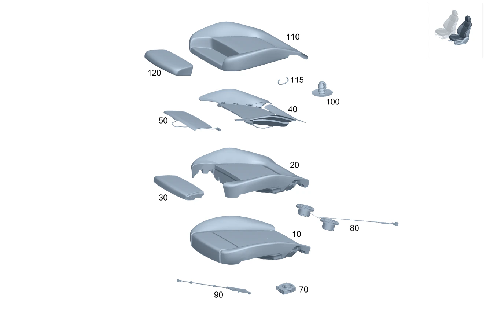

| № | Артикул | Название | Кол. | Примечание | Ограничение |
|---|---|---|---|---|---|
| 10 | A 177 910 11 03 | Подушка сиденья водителя | 1 | Сиденье слева Рулевое управление: Вправо | U10+7U1+300A |
| 10 | A 177 910 13 03 | Подушка сиденья водителя (DRIVER SEAT CUSHION) | 1 | Сиденье слева Рулевое управление: Вправо | U10+7U2+100A+(809/800/801) |
| 10 | A 177 910 13 03 | Подушка сиденья водителя (DRIVER SEAT CUSHION) | 1 | Сиденье слева Рулевое управление: Вправо | U10+7U2+100A+241+-(809/800/801) |
| 10 | A 177 910 41 05 | Подушка сиденья водителя (DRIVER SEAT CUSHION) | 1 | Сиденье слева Рулевое управление: Вправо | U10+7U2+100A |
| 10 | A 177 910 15 03 | Подушка сиденья водителя (DRIVER SEAT CUSHION) | 1 | Сиденье слева Рулевое управление: Вправо | U10+7U2+100A+401+(809/800/801) |
| 10 | A 177 910 15 03 | Подушка сиденья водителя (DRIVER SEAT CUSHION) | 1 | Сиденье слева Рулевое управление: Вправо | U10+7U2+100A+401+241+-(809/800/801) |
| 10 | A 177 910 43 05 | Подушка сиденья водителя | 1 | Сиденье слева Рулевое управление: Вправо | U10+7U2+100A+401 |
| 10 | A 177 910 17 03 | Подушка сиденья водителя (DRIVER SEAT CUSHION) | 1 | Сиденье слева Рулевое управление: Вправо | U10+7U2+200A+(809/800/801) |
| 10 | A 177 910 17 03 | Подушка сиденья водителя (DRIVER SEAT CUSHION) | 1 | Сиденье слева Рулевое управление: Вправо | U10+7U2+200A+241+-(809/800/801) |
| 10 | A 177 910 45 05 | Подушка сиденья водителя (DRIVER SEAT CUSHION) | 1 | Сиденье слева Рулевое управление: Вправо | U10+7U2+200A |
| 10 | A 177 910 19 03 | Подушка сиденья водителя (DRIVER SEAT CUSHION) | 1 | Сиденье слева Рулевое управление: Вправо | U10+7U2+200A+401+(809/800/801) |
| 10 | A 177 910 19 03 | Подушка сиденья водителя (DRIVER SEAT CUSHION) | 1 | Сиденье слева Рулевое управление: Вправо | U10+7U2+200A+401+241+-(809/800/801) |
| 10 | A 177 910 47 05 | Подушка сиденья водителя | 1 | Сиденье слева Рулевое управление: Вправо | U10+7U2+200A+401 |
| 10 | A 177 910 21 03 | Подушка сиденья водителя (DRIVER SEAT CUSHION) | 1 | Сиденье слева Рулевое управление: Вправо | U10+7U2+310A+(809/800/801) |
| 10 | A 177 910 21 03 | Подушка сиденья водителя (DRIVER SEAT CUSHION) | 1 | Сиденье слева Рулевое управление: Вправо | U10+7U2+310A+241+-(809/800/801) |
| 10 | A 177 910 51 05 | Подушка сиденья водителя (DRIVER SEAT CUSHION) | 1 | Сиденье слева Рулевое управление: Вправо | U10+7U2+310A+(802/803+-053) |
| 10 | A 177 910 23 03 | Подушка сиденья водителя (DRIVER SEAT CUSHION) | 1 | Сиденье слева Рулевое управление: Вправо | U10+7U2+320A+(809/800/801) |
| 10 | A 177 910 23 03 | Подушка сиденья водителя (DRIVER SEAT CUSHION) | 1 | Сиденье слева Рулевое управление: Вправо | U10+7U2+320A+241+-(809/800/801) |
| 10 | A 177 910 53 05 | Подушка сиденья водителя (DRIVER SEAT CUSHION) | 1 | Сиденье слева Рулевое управление: Вправо | U10+7U2+320A |
| 10 | A 177 910 13 08 | Подушка сиденья водителя | 1 | Сиденье слева Рулевое управление: Вправо | U10+7U2+100A+101A+-(809/800/801/802/803/804+-054) |
| 10 | A 177 910 15 08 | Подушка сиденья водителя (DRIVER SEAT CUSHION) | 1 | Сиденье слева Рулевое управление: Вправо | U10+7U2+100A+101A+241+-(809/800/801/802/803/804+-054) |
| 10 | A 177 910 77 07 | Подушка сиденья водителя | 1 | Сиденье слева Рулевое управление: Вправо | U10+7U2+100A+105A+-(809/800/801/802/803/804+-054) |
| 10 | A 177 910 75 07 | Подушка сиденья водителя | 1 | Сиденье слева Рулевое управление: Вправо | U10+7U2+100A+105A+241+-(809/800/801/802/803/804+-054) |
| 10 | A 177 910 85 07 | Подушка сиденья водителя | 1 | Сиденье слева Рулевое управление: Вправо | U10+7U2+310A+311A+-(809/800/801/802/803+-053) |
| 10 | A 177 910 83 07 | Подушка сиденья водителя | 1 | Сиденье слева Рулевое управление: Вправо | U10+7U2+310A+311A+241+-(809/800/801/802/803+-053) |
| 10 | A 177 910 93 07 | Подушка сиденья водителя | 1 | Сиденье слева Рулевое управление: Вправо | U10+7U2+310A+318A+-(809/800/801/802/803+-053) |
| 10 | A 177 910 91 07 | Подушка сиденья водителя | 1 | Сиденье слева Рулевое управление: Вправо | U10+7U2+310A+318A+241+-(809/800/801/802/803+-053) |
| 10 | A 177 910 31 03 | Подушка сиденья водителя (DRIVER SEAT CUSHION) | 1 | Сиденье слева Рулевое управление: Вправо | U10+7U4+(100A/150A)+(809/800/801) |
| 10 | A 177 910 31 03 | Подушка сиденья водителя (DRIVER SEAT CUSHION) | 1 | Сиденье слева Рулевое управление: Вправо | U10+7U4+(100A/150A)+241+-(809/800/801) |
| 10 | A 177 910 79 05 | Подушка сиденья водителя | 1 | Сиденье слева Рулевое управление: Вправо | U10+7U4+(100A/150A) |
| 10 | A 177 910 33 03 | Подушка сиденья водителя (DRIVER SEAT CUSHION) | 1 | Сиденье слева Рулевое управление: Вправо | U10+7U4+(100A/150A)+401+(809/800/801) |
| 10 | A 177 910 33 03 | Подушка сиденья водителя (DRIVER SEAT CUSHION) | 1 | Сиденье слева Рулевое управление: Вправо | U10+7U4+(100A/150A)+401+241+-(809/800/801) |
| 10 | A 177 910 81 05 | Подушка сиденья водителя (DRIVER SEAT CUSHION) | 1 | Сиденье слева Рулевое управление: Вправо | U10+7U4+(100A/150A)+401 |
| 10 | A 177 910 35 03 | Подушка сиденья водителя (DRIVER SEAT CUSHION) | 1 | Сиденье слева Рулевое управление: Вправо | U10+7U4+200A+(809/800/801) |
| 10 | A 177 910 83 05 | Подушка сиденья водителя (DRIVER SEAT CUSHION) | 1 | Сиденье слева Рулевое управление: Вправо | U10+7U4+200A+(802/803/804) |
| 10 | A 177 910 29 06 | Подушка сиденья водителя (DRIVER SEAT CUSHION) | 1 | Сиденье слева Рулевое управление: Вправо | U10+7U4+200A+241+(802/803/804) |
| 10 | A 177 910 37 03 | Подушка сиденья водителя | 1 | Сиденье слева Рулевое управление: Вправо | U10+7U4+200A+401+(809/800/801) |
| 10 | A 177 910 37 03 | Подушка сиденья водителя | 1 | Сиденье слева Рулевое управление: Вправо | U10+7U4+200A+401+241+(802/803) |
| 10 | A 177 910 85 05 | Подушка сиденья водителя | 1 | Сиденье слева Рулевое управление: Вправо | U10+7U4+200A+401+-(809/800/801/802/803) |
| 10 | A 247 910 75 01 | Подушка сиденья водителя | 1 | Сиденье слева Рулевое управление: Вправо | U10+7U4+210A+(809/800/801) |
| 10 | A 247 910 77 01 | Подушка сиденья водителя | 1 | Сиденье слева Рулевое управление: Вправо | U10+7U4+210A+401+(809/800/801) |
| 10 | A 247 910 77 01 | Подушка сиденья водителя | 1 | Сиденье слева Рулевое управление: Вправо | U10+7U4+210A+401+241+-(809/800/801) |
| 10 | A 247 910 29 02 | Подушка сиденья водителя | 1 | Сиденье слева Рулевое управление: Вправо | U10+7U4+210A+401 |
| 10 | A 177 910 39 03 | Подушка сиденья водителя (DRIVER SEAT CUSHION) | 1 | Сиденье слева Рулевое управление: Вправо | U10+7U4+250A+(809/800/801) |
| 10 | A 177 910 45 06 | Подушка сиденья водителя (DRIVER SEAT CUSHION) | 1 | Сиденье слева Рулевое управление: Вправо | U10+7U4+250A+-(809/800/801) |
| 10 | A 177 910 31 06 | Подушка сиденья водителя (DRIVER SEAT CUSHION) | 1 | Сиденье слева Рулевое управление: Вправо | U10+7U4+250A+241+-(809/800/801) |
| 10 | A 177 910 41 03 | Подушка сиденья водителя (DRIVER SEAT CUSHION) | 1 | Сиденье слева Рулевое управление: Вправо | U10+7U4+250A+401+(809/800/801) |
| 10 | A 177 910 41 03 | Подушка сиденья водителя (DRIVER SEAT CUSHION) | 1 | Сиденье слева Рулевое управление: Вправо | U10+7U4+250A+241+401 |
| 10 | A 177 910 47 06 | Подушка сиденья водителя | 1 | Сиденье слева Рулевое управление: Вправо | U10+7U4+250A+401 |
| 10 | A 177 910 95 07 | Подушка сиденья водителя (DRIVER SEAT CUSHION) | 1 | Сиденье слева Рулевое управление: Вправо | U10+7U4+650A+651A+241+-(809/800/801/802/803/804+-054) |
| 10 | A 177 910 99 07 | Подушка сиденья водителя | 1 | Сиденье слева Рулевое управление: Вправо | U10+7U4+650A+654A+241+(809/800/801/802/803/804+-054) |
| 10 | A 177 910 97 07 | Подушка сиденья водителя (DRIVER SEAT CUSHION) | 1 | Сиденье слева Рулевое управление: Вправо | U10+7U4+650A+651A+-(809/800/801/802/803/804+-054) |
| 10 | A 177 910 43 03 | Подушка сиденья водителя (DRIVER SEAT CUSHION) | 1 | Сиденье слева Рулевое управление: Вправо | U10+7U4+650A+(809/800/801) |
| 10 | A 177 910 01 08 | Подушка сиденья водителя | 1 | Сиденье слева Рулевое управление: Вправо | U10+7U4+650A+654A+-(809/800/801/802/803/804+-054) |
| 10 | A 177 910 43 03 | Подушка сиденья водителя (DRIVER SEAT CUSHION) | 1 | Сиденье слева Рулевое управление: Вправо | U10+7U4+650A+241+-(809/800/801) |
| 10 | A 177 910 59 05 | Подушка сиденья водителя (DRIVER SEAT CUSHION) | 1 | Сиденье слева Рулевое управление: Вправо | U10+7U4+650A |
| 10 | A 247 910 75 01 | Подушка сиденья водителя | 1 | Сиденье слева Рулевое управление: Вправо | U10+7U4+210A+241+(809/800/801) |
| 10 | A 247 910 25 02 | Подушка сиденья водителя | 1 | Сиденье слева Рулевое управление: Вправо | U10+7U4+210A+241+-(809/800/801) |
| 10 | A 247 910 27 02 | Подушка сиденья водителя | 1 | Сиденье слева Рулевое управление: Вправо | U10+7U4+210A |
| 10 | A 177 910 95 07 | Подушка сиденья водителя (DRIVER SEAT CUSHION) | 1 | Сиденье слева Рулевое управление: Вправо | U10+7U4+650A+(651A/641A)+241+-(809/800/801/802/803/804+-054) |
| 10 | A 177 910 97 07 | Подушка сиденья водителя (DRIVER SEAT CUSHION) | 1 | Сиденье слева Рулевое управление: Вправо | U10+7U4+650A+(651A/641A)+-(809/800/801/802/803/804+-054) |
| 10 | A 247 910 79 01 | Подушка сиденья водителя | 1 | Сиденье слева Рулевое управление: Вправо | U10+7U4+700A |
| 10 | A 247 910 09 02 | Подушка сиденья водителя (DRIVER SEAT CUSHION) | 1 | Сиденье слева Рулевое управление: Вправо | U10+555+650A |
| 10 | A 247 910 11 02 | Подушка сиденья водителя | 1 | Сиденье слева Рулевое управление: Вправо | U10+555+150A |
| 10 | A 247 910 13 02 | Подушка сиденья водителя (DRIVER SEAT CUSHION) | 1 | Сиденье слева Рулевое управление: Вправо | U10+555+(200A/250A) |
| 10 | A 177 910 05 05 | Подушка сиденья водителя (DRIVER SEAT CUSHION) | 1 | Сиденье слева Рулевое управление: Вправо | U10+555+(200A/250A)+401 |
| 10 | A 247 910 15 02 | Подушка сиденья водителя (DRIVER SEAT CUSHION) | 1 | Сиденье слева Рулевое управление: Вправо | U10+555+(200A/250A)+401 |
| 10 | A 177 910 17 08 | Подушка сиденья водителя | 1 | Сиденье слева Рулевое управление: Вправо | U10+7U4+200A+-(809/800/801/802/803/804) |
| 10 | A 177 910 19 08 | Подушка сиденья водителя | 1 | Сиденье слева Рулевое управление: Вправо | U10+7U4+200A+241+-(809/800/801/802/803/804) |
| 10 | A 177 910 81 07 | Подушка сиденья водителя | 1 | Сиденье слева Рулевое управление: Вправо | U10+7U4+150A+-(809/800/801/802/803/804+-054) |
| 10 | A 177 910 79 07 | Подушка сиденья водителя | 1 | Сиденье слева Рулевое управление: Вправо | U10+7U4+150A+241 |
| 20 | A 177 910 16 00 | Подкладка подушки сиденья (PADDING, FRT. SEAT CUSH.) | 1 | Подушка сиденья слева | 7U1 |
| 20 | A 177 910 21 00 | Подкладка подушки сиденья (PADDING, FRT. SEAT CUSH.) | 1 | Подушка сиденья слева | 7U2/7U4 |
| 20 | A 177 910 94 00 | Подкладка подушки сиденья (PADDING, FRT. SEAT CUSH.) | 1 | Подушка сиденья слева | (7U2/7U4)+401/(7U2/7U4)+401+(200A/210A/250A) |
| 20 | A 177 910 26 01 | Подкладка подушки сиденья (PADDING, FRT. SEAT CUSH.) | 1 | Подушка сиденья слева | (7U2/7U4)+(200A/210A/250A) |
| 20 | A 177 910 21 00 | Подкладка подушки сиденья (PADDING, FRT. SEAT CUSH.) | 1 | Подушка сиденья слева Рулевое управление: Влево | (7U2/7U4)+(802/803/804) |
| 20 | A 177 910 21 00 | Подкладка подушки сиденья (PADDING, FRT. SEAT CUSH.) | 1 | Подушка сиденья слева Рулевое управление: Влево | (7U2/7U4) |
| 20 | A 177 910 39 06 | Подкладка подушки сиденья (PADDING, FRT. SEAT CUSH.) | 1 | Подушка сиденья слева Рулевое управление: Вправо | (7U2/7U4)+(802/803/804) |
| 20 | A 177 910 39 06 | Подкладка подушки сиденья (PADDING, FRT. SEAT CUSH.) | 1 | Подушка сиденья слева Рулевое управление: Вправо | (7U2/7U4) |
| 20 | A 177 910 21 00 | Подкладка подушки сиденья (PADDING, FRT. SEAT CUSH.) | 1 | Подушка сиденья слева Рулевое управление: Вправо | (7U2/7U4)+241+(802/803/804) |
| 20 | A 177 910 21 00 | Подкладка подушки сиденья (PADDING, FRT. SEAT CUSH.) | 1 | Подушка сиденья слева Рулевое управление: Вправо | (7U2/7U4)+241 |
| 20 | A 177 910 94 00 | Подкладка подушки сиденья (PADDING, FRT. SEAT CUSH.) | 1 | Подушка сиденья слева Рулевое управление: Влево | (7U2/7U4)+401+(802/803) |
| 20 | A 177 910 94 00 | Подкладка подушки сиденья (PADDING, FRT. SEAT CUSH.) | 1 | Подушка сиденья слева Рулевое управление: Влево | (7U2/7U4)+401 |
| 20 | A 177 910 40 06 | Подкладка подушки сиденья (PADDING, FRT. SEAT CUSH.) | 1 | Подушка сиденья слева Рулевое управление: Вправо | (7U2/7U4)+401+(802/803) |
| 20 | A 177 910 40 06 | Подкладка подушки сиденья (PADDING, FRT. SEAT CUSH.) | 1 | Подушка сиденья слева Рулевое управление: Вправо | (7U2/7U4)+401 |
| 20 | A 177 910 94 00 | Подкладка подушки сиденья (PADDING, FRT. SEAT CUSH.) | 1 | Подушка сиденья слева Рулевое управление: Вправо | (7U2/7U4)+241+401+(802/803) |
| 20 | A 177 910 94 00 | Подкладка подушки сиденья (PADDING, FRT. SEAT CUSH.) | 1 | Подушка сиденья слева Рулевое управление: Вправо | (7U2/7U4)+401+241 |
| 20 | A 177 910 94 00 | Подкладка подушки сиденья (PADDING, FRT. SEAT CUSH.) | 1 | Подушка сиденья слева Рулевое управление: Влево | (7U2/7U4)+(200A/210A/250A)+401+(802/803) |
| 20 | A 177 910 94 00 | Подкладка подушки сиденья (PADDING, FRT. SEAT CUSH.) | 1 | Подушка сиденья слева Рулевое управление: Влево | (7U2/7U4)+(200A/210A/250A)+401 |
| 20 | A 177 910 40 06 | Подкладка подушки сиденья (PADDING, FRT. SEAT CUSH.) | 1 | Подушка сиденья слева Рулевое управление: Вправо | (7U2/7U4)+(200A/210A/250A)+401+(802/803) |
| 20 | A 177 910 40 06 | Подкладка подушки сиденья (PADDING, FRT. SEAT CUSH.) | 1 | Подушка сиденья слева Рулевое управление: Вправо | (7U2/7U4)+(200A/210A/250A)+401 |
| 20 | A 177 910 94 00 | Подкладка подушки сиденья (PADDING, FRT. SEAT CUSH.) | 1 | Подушка сиденья слева Рулевое управление: Вправо | (7U2/7U4)+(200A/210A/250A)+241+401+(802/803) |
| 20 | A 177 910 94 00 | Подкладка подушки сиденья (PADDING, FRT. SEAT CUSH.) | 1 | Подушка сиденья слева Рулевое управление: Вправо | (7U2/7U4)+(200A/210A/250A)+401+241 |
| 20 | A 177 910 26 01 | Подкладка подушки сиденья (PADDING, FRT. SEAT CUSH.) | 1 | Подушка сиденья слева Рулевое управление: Влево | 7U2+200A+(802/803/804) |
| 20 | A 177 910 26 01 | Подкладка подушки сиденья (PADDING, FRT. SEAT CUSH.) | 1 | Подушка сиденья слева Рулевое управление: Влево | 7U2+200A |
| 20 | A 177 910 26 01 | Подкладка подушки сиденья (PADDING, FRT. SEAT CUSH.) | 1 | Подушка сиденья слева Рулевое управление: Влево | 7U4+(200A/210A/250A)+802 |
| 20 | A 177 910 26 01 | Подкладка подушки сиденья (PADDING, FRT. SEAT CUSH.) | 1 | Подушка сиденья слева Рулевое управление: Влево | 7U4+(200A/210A/250A) |
| 20 | A 177 910 41 06 | Подкладка подушки сиденья (PADDING, FRT. SEAT CUSH.) | 1 | Подушка сиденья слева Рулевое управление: Вправо | 7U2+200A+(802/803/804) |
| 20 | A 177 910 41 06 | Подкладка подушки сиденья (PADDING, FRT. SEAT CUSH.) | 1 | Подушка сиденья слева Рулевое управление: Вправо | 7U2+200A |
| 20 | A 177 910 26 01 | Подкладка подушки сиденья (PADDING, FRT. SEAT CUSH.) | 1 | Подушка сиденья слева Рулевое управление: Вправо | 7U2+200A+241+(802/803/804) |
| 20 | A 177 910 26 01 | Подкладка подушки сиденья (PADDING, FRT. SEAT CUSH.) | 1 | Подушка сиденья слева Рулевое управление: Вправо | 7U2+200A+241 |
| 20 | A 177 910 41 06 | Подкладка подушки сиденья (PADDING, FRT. SEAT CUSH.) | 1 | Подушка сиденья слева Рулевое управление: Вправо | 7U4+(200A/210A/250A)+802 |
| 20 | A 177 910 41 06 | Подкладка подушки сиденья (PADDING, FRT. SEAT CUSH.) | 1 | Подушка сиденья слева Рулевое управление: Вправо | 7U4+(200A/210A/250A) |
| 20 | A 177 910 26 01 | Подкладка подушки сиденья (PADDING, FRT. SEAT CUSH.) | 1 | Подушка сиденья слева Рулевое управление: Вправо | 7U4+(200A/210A/250A)+241+802 |
| 20 | A 177 910 26 01 | Подкладка подушки сиденья (PADDING, FRT. SEAT CUSH.) | 1 | Подушка сиденья слева Рулевое управление: Вправо | 7U4+(200A/210A/250A)+241 |
| 20 | A 177 910 26 01 | Подкладка подушки сиденья (PADDING, FRT. SEAT CUSH.) | 1 | Подушка сиденья слева Рулевое управление: Влево | 7U4+(200A/210A/250A) |
| 20 | A 177 910 41 06 | Подкладка подушки сиденья (PADDING, FRT. SEAT CUSH.) | 1 | Подушка сиденья слева Рулевое управление: Вправо | 7U4+(200A/210A/250A) |
| 20 | A 177 910 26 01 | Подкладка подушки сиденья (PADDING, FRT. SEAT CUSH.) | 1 | Подушка сиденья слева Рулевое управление: Вправо | 7U4+(200A/210A/250A)+241 |
| 20 | A 177 910 21 00 | Подкладка подушки сиденья (PADDING, FRT. SEAT CUSH.) | 1 | Подушка сиденья слева Рулевое управление: Влево | 7U4+(200A/210A/250A)+(802+052/803/804) |
| 20 | A 177 910 21 00 | Подкладка подушки сиденья (PADDING, FRT. SEAT CUSH.) | 1 | Подушка сиденья слева Рулевое управление: Влево | 7U4+(200A/210A/250A) |
| 20 | A 177 910 39 06 | Подкладка подушки сиденья (PADDING, FRT. SEAT CUSH.) | 1 | Подушка сиденья слева Рулевое управление: Вправо | 7U4+(200A/210A/250A)+(802+052/803/804) |
| 20 | A 177 910 39 06 | Подкладка подушки сиденья (PADDING, FRT. SEAT CUSH.) | 1 | Подушка сиденья слева Рулевое управление: Вправо | 7U4+(200A/210A/250A) |
| 20 | A 177 910 21 00 | Подкладка подушки сиденья (PADDING, FRT. SEAT CUSH.) | 1 | Подушка сиденья слева Рулевое управление: Вправо | 7U4+(200A/210A/250A)+241+(802+052/803/804) |
| 20 | A 177 910 21 00 | Подкладка подушки сиденья (PADDING, FRT. SEAT CUSH.) | 1 | Подушка сиденья слева Рулевое управление: Вправо | 7U4+(200A/210A/250A)+241 |
| 20 | A 177 910 94 00 | Подкладка подушки сиденья (PADDING, FRT. SEAT CUSH.) | 1 | Подушка сиденья слева Рулевое управление: Влево | (7U2/7U4)+401 |
| 20 | A 177 910 40 06 | Подкладка подушки сиденья (PADDING, FRT. SEAT CUSH.) | 1 | Подушка сиденья слева Рулевое управление: Вправо | (7U2/7U4)+401 |
| 20 | A 177 910 94 00 | Подкладка подушки сиденья (PADDING, FRT. SEAT CUSH.) | 1 | Подушка сиденья слева Рулевое управление: Вправо | (7U2/7U4)+401+241 |
| 20 | A 177 910 94 00 | Подкладка подушки сиденья (PADDING, FRT. SEAT CUSH.) | 1 | Подушка сиденья слева Рулевое управление: Влево | (7U2/7U4)+(200A/210A/250A)+401 |
| 20 | A 177 910 40 06 | Подкладка подушки сиденья (PADDING, FRT. SEAT CUSH.) | 1 | Подушка сиденья слева Рулевое управление: Вправо | (7U2/7U4)+(200A/210A/250A)+401 |
| 20 | A 177 910 94 00 | Подкладка подушки сиденья (PADDING, FRT. SEAT CUSH.) | 1 | Подушка сиденья слева Рулевое управление: Вправо | (7U2/7U4)+(200A/210A/250A)+401+241 |
| 20 | A 177 910 78 03 | Подкладка подушки сиденья (PADDING, FRT. SEAT CUSH.) | 1 | Подушка сиденья слева | 555 |
| 20 | A 177 910 80 03 | Подкладка подушки сиденья (PADDING, FRT. SEAT CUSH.) | 1 | Подушка сиденья слева | 555+401 |
| 30 | A 177 910 14 01 | Подкладка подушки сиденья (PADDING, FRT. SEAT CUSH.) | 1 | Подушка сиденья слева | (7U2/7U4) |
| 30 | A 177 910 14 01 | Подкладка подушки сиденья (PADDING, FRT. SEAT CUSH.) | 1 | Подушка сиденья слева Рулевое управление: Влево | (7U2/7U4)+(802/803/804) |
| 30 | A 177 910 14 01 | Подкладка подушки сиденья (PADDING, FRT. SEAT CUSH.) | 1 | Подушка сиденья слева Рулевое управление: Влево | (7U2/7U4) |
| 30 | A 177 910 14 01 | Подкладка подушки сиденья (PADDING, FRT. SEAT CUSH.) | 1 | Подушка сиденья слева Рулевое управление: Вправо | (7U2/7U4)+241+(802/803/804) |
| 30 | A 177 910 14 01 | Подкладка подушки сиденья (PADDING, FRT. SEAT CUSH.) | 1 | Подушка сиденья слева Рулевое управление: Вправо | (7U2/7U4)+241 |
| 30 | A 177 910 82 03 | - Подкладка подушки сиденья (PADDING, FRT. SEAT CUSH.) | 1 | Подушка сиденья слева | 555 |
| 40 | A 177 906 33 00 | Подогрев сидений (SEAT HEATING) | 1 | Подогрев сидений | 7U1+873 |
| 40 | A 177 914 17 00 | Накидка водит. сиденья (ADDITIONAL PADDING) | 1 | Подогрев сидений | (7U2/7U4)+401 |
| 40 | A 177 914 17 00 | Накидка водит. сиденья (ADDITIONAL PADDING) | 1 | Подогрев сидений Рулевое управление: Влево | (7U2/7U4)+401+(802/803) |
| 40 | A 177 914 17 00 | Накидка водит. сиденья (ADDITIONAL PADDING) | 1 | Подогрев сидений Рулевое управление: Влево | (7U2/7U4)+401 |
| 40 | A 177 914 17 00 | Накидка водит. сиденья (ADDITIONAL PADDING) | 1 | Подогрев сидений Рулевое управление: Вправо | (7U2/7U4)+401+241+(802/803) |
| 40 | A 177 914 17 00 | Накидка водит. сиденья (ADDITIONAL PADDING) | 1 | Подогрев сидений Рулевое управление: Вправо | (7U2/7U4)+401+241 |
| 40 | A 177 914 16 00 | Накидка водит. сиденья | 1 | Подогрев сидений Рулевое управление: Вправо | (7U2/7U4)+401+(802/803) |
| 40 | A 177 914 16 00 | Накидка водит. сиденья | 1 | Подогрев сидений Рулевое управление: Вправо | (7U2/7U4)+401 |
| 40 | A 177 906 09 05 | Подогрев сидений (SEAT HEATING) | 1 | Подогрев сидений | (7U2/7U4)+873 |
| 40 | A 177 906 85 05 | Подогрев сидений (SEAT HEATING) | 1 | Подогрев сидений Рулевое управление: Влево | (7U2/7U4)+873+(802/803/804) |
| 40 | A 177 906 85 05 | Подогрев сидений (SEAT HEATING) | 1 | Подогрев сидений Рулевое управление: Влево | (7U2/7U4)+873 |
| 40 | A 177 906 85 05 | Подогрев сидений (SEAT HEATING) | 1 | Подогрев сидений Рулевое управление: Вправо | (7U2/7U4)+241+873+(802/803/804) |
| 40 | A 177 906 85 05 | Подогрев сидений (SEAT HEATING) | 1 | Подогрев сидений Рулевое управление: Вправо | (7U2/7U4)+873+241 |
| 40 | A 177 906 07 05 | Подогрев сидений (SEAT HEATING) | 1 | Подогрев сидений Рулевое управление: Вправо | (7U2/7U4)+873+(802/803/804) |
| 40 | A 177 906 07 05 | Подогрев сидений (SEAT HEATING) | 1 | Подогрев сидений Рулевое управление: Вправо | (7U2/7U4)+873 |
| 40 | A 177 906 75 02 | - Подогрев сидений (SEAT HEATING) | 1 | Подогрев сидений | 555+(873/401) |
| 40 | A 177 906 09 05 | Подогрев сидений (SEAT HEATING) | 1 | Подогрев сидений | (7U2/7U4)+873+700 |
| 50 | A 177 906 24 01 | Подогрев сидений (SEAT HEATING) | 1 | Подогрев сидений | (7U2/7U4)+(873/401) |
| 50 | A 177 906 86 05 | Подогрев сидений (SEAT HEATING) | 1 | Подогрев сидений Рулевое управление: Влево | (7U2/7U4)+873+(802/803/804) |
| 50 | A 177 906 86 05 | Подогрев сидений (SEAT HEATING) | 1 | Подогрев сидений Рулевое управление: Влево | (7U2/7U4)+873 |
| 50 | A 177 906 86 05 | Подогрев сидений (SEAT HEATING) | 1 | Подогрев сидений Рулевое управление: Вправо | (7U2/7U4)+873+241+(802/803/804) |
| 50 | A 177 906 86 05 | Подогрев сидений (SEAT HEATING) | 1 | Подогрев сидений Рулевое управление: Вправо | (7U2/7U4)+873+241 |
| 50 | A 177 906 24 01 | Подогрев сидений (SEAT HEATING) | 1 | Подогрев сидений Рулевое управление: Влево | (7U2/7U4)+401+(802/803) |
| 50 | A 177 906 24 01 | Подогрев сидений (SEAT HEATING) | 1 | Подогрев сидений Рулевое управление: Влево | (7U2/7U4)+401 |
| 50 | A 177 906 24 01 | Подогрев сидений (SEAT HEATING) | 1 | Подогрев сидений Рулевое управление: Вправо | (7U2/7U4)+401+241+(802/803) |
| 50 | A 177 906 24 01 | Подогрев сидений (SEAT HEATING) | 1 | Подогрев сидений Рулевое управление: Вправо | (7U2/7U4)+401+241 |
| 50 | A 177 906 76 02 | - Подогрев сидений (SEAT HEATING) | 1 | Подогрев сидений | 555+(873/401) |
| 50 | A 177 906 24 01 | Подогрев сидений (SEAT HEATING) | 1 | Подогрев сидений | (7U2/7U4)+873+700 |
| 70 | A 177 906 62 00 | Вентилятор (FAN) | 1 | Подушка сиденья | 401 |
| 80 | A 099 906 02 01 | Вентилятор (FAN) | 1 | Подушка сиденья | 555+401 |
| 90 | A 000 905 01 05 | Датчик занятости сиденья (OCCUPANCY SENSOR) | 1 | Рулевое управление: Вправо | |
| 100 | A 000 991 41 02 | Фиксатор вставной (PLUG-IN FASTENER) | 2 | Крепление обивки | 555 |
| 100 | A 000 991 41 02 | Фиксатор вставной (PLUG-IN FASTENER) | 1 | Крепление обивки | 555+(873/401) |
| 110 | A 177 910 44 02 | Обивка подушки сиденья (OUTER COVER, SEAT CUSHION) | 1 | Подушка сиденья слева | 7U1+300A |
| 110 | A 177 910 84 01 | Обивка подушки сиденья (OUTER COVER, SEAT CUSHION) | 1 | Подушка сиденья слева | 7U2+100A |
| 110 | A 177 910 96 00 | Обивка подушки сиденья (OUTER COVER, SEAT CUSHION) | 1 | Подушка сиденья слева | 7U2+100A+401 |
| 110 | A 177 910 88 00 | Обивка подушки сиденья (OUTER COVER, SEAT CUSHION) | 1 | Подушка сиденья слева | 7U2+200A |
| 110 | A 177 910 07 02 | Обивка подушки сиденья (OUTER COVER, SEAT CUSHION) | 1 | Подушка сиденья слева | 7U2+200A+401 |
| 110 | A 177 910 83 01 | Обивка подушки сиденья (OUTER COVER, SEAT CUSHION) | 1 | Подушка сиденья слева | 7U2+310A |
| 110 | A 177 910 05 02 | Обивка подушки сиденья (OUTER COVER, SEAT CUSHION) | 1 | Подушка сиденья слева | 7U2+320A |
| 110 | A 177 910 84 01 | Обивка подушки сиденья (OUTER COVER, SEAT CUSHION) | 1 | Подушка сиденья слева Рулевое управление: Влево | 7U2+100A+(802/803/804) |
| 110 | A 177 910 84 01 | Обивка подушки сиденья (OUTER COVER, SEAT CUSHION) | 1 | Подушка сиденья слева Рулевое управление: Влево | 7U2+100A |
| 110 | A 177 910 17 07 | Обивка подушки сиденья | 1 | Подушка сиденья слева Рулевое управление: Влево | 7U2+100A+101A+(804+054/805) |
| 110 | A 177 910 17 07 | Обивка подушки сиденья | 1 | Подушка сиденья слева Рулевое управление: Влево | 7U2+100A+101A |
| 110 | A 177 910 17 07 | Обивка подушки сиденья | 1 | Подушка сиденья слева Рулевое управление: Влево | 7U2+100A+(101A/121A+806) |
| 110 | A 177 910 17 07 | Обивка подушки сиденья | 1 | Подушка сиденья слева Рулевое управление: Влево | 7U2+100A+(101A/121A) |
| 110 | A 177 910 65 07 | Обивка подушки сиденья (OUTER COVER, SEAT CUSHION) | 1 | Подушка сиденья слева Рулевое управление: Влево | 7U2+100A+(104A/105A)+(804+054/805) |
| 110 | A 177 910 65 07 | Обивка подушки сиденья (OUTER COVER, SEAT CUSHION) | 1 | Подушка сиденья слева Рулевое управление: Влево | 7U2+100A+(104A/105A) |
| 110 | A 177 910 29 05 | Обивка подушки сиденья (OUTER COVER, SEAT CUSHION) | 1 | Подушка сиденья слева Рулевое управление: Вправо | 7U2+100A+(802/803/804) |
| 110 | A 177 910 29 05 | Обивка подушки сиденья (OUTER COVER, SEAT CUSHION) | 1 | Подушка сиденья слева Рулевое управление: Вправо | 7U2+100A |
| 110 | A 177 910 19 07 | Обивка подушки сиденья | 1 | Подушка сиденья слева Рулевое управление: Вправо | 7U2+100A+101A+(804+054/805) |
| 110 | A 177 910 19 07 | Обивка подушки сиденья | 1 | Подушка сиденья слева Рулевое управление: Вправо | 7U2+100A+101A |
| 110 | A 177 910 66 07 | Обивка подушки сиденья (OUTER COVER, SEAT CUSHION) | 1 | Подушка сиденья слева Рулевое управление: Вправо | 7U2+100A+105A+(804+054/805) |
| 110 | A 177 910 66 07 | Обивка подушки сиденья (OUTER COVER, SEAT CUSHION) | 1 | Подушка сиденья слева Рулевое управление: Вправо | 7U2+100A+105A |
| 110 | A 177 910 84 01 | Обивка подушки сиденья (OUTER COVER, SEAT CUSHION) | 1 | Подушка сиденья слева Рулевое управление: Вправо | 7U2+100A+241+(802/803/804) |
| 110 | A 177 910 84 01 | Обивка подушки сиденья (OUTER COVER, SEAT CUSHION) | 1 | Подушка сиденья слева Рулевое управление: Вправо | 7U2+100A+241 |
| 110 | A 177 910 17 07 | Обивка подушки сиденья | 1 | Подушка сиденья слева Рулевое управление: Вправо | 7U2+100A+101A+241+(804+054/805) |
| 110 | A 177 910 17 07 | Обивка подушки сиденья | 1 | Подушка сиденья слева Рулевое управление: Вправо | 7U2+100A+101A+241 |
| 110 | A 177 910 65 07 | Обивка подушки сиденья (OUTER COVER, SEAT CUSHION) | 1 | Подушка сиденья слева Рулевое управление: Вправо | 7U2+100A+105A+241+(804+054/805) |
| 110 | A 177 910 65 07 | Обивка подушки сиденья (OUTER COVER, SEAT CUSHION) | 1 | Подушка сиденья слева Рулевое управление: Вправо | 7U2+100A+105A+241 |
| 110 | A 177 910 96 00 | Обивка подушки сиденья (OUTER COVER, SEAT CUSHION) | 1 | Подушка сиденья слева Рулевое управление: Влево | 7U2+100A+401+(802/803) |
| 110 | A 177 910 96 00 | Обивка подушки сиденья (OUTER COVER, SEAT CUSHION) | 1 | Подушка сиденья слева Рулевое управление: Влево | 7U2+100A+401 |
| 110 | A 177 910 30 05 | Обивка подушки сиденья | 1 | Подушка сиденья слева Рулевое управление: Вправо | 7U2+100A+401+(802/803) |
| 110 | A 177 910 30 05 | Обивка подушки сиденья | 1 | Подушка сиденья слева Рулевое управление: Вправо | 7U2+100A+401 |
| 110 | A 177 910 96 00 | Обивка подушки сиденья (OUTER COVER, SEAT CUSHION) | 1 | Подушка сиденья слева Рулевое управление: Вправо | 7U2+100A+401+241+(802/803) |
| 110 | A 177 910 96 00 | Обивка подушки сиденья (OUTER COVER, SEAT CUSHION) | 1 | Подушка сиденья слева Рулевое управление: Вправо | 7U2+100A+401+241 |
| 110 | A 177 910 88 00 | Обивка подушки сиденья (OUTER COVER, SEAT CUSHION) | 1 | Подушка сиденья слева Рулевое управление: Влево | 7U2+200A+(802/803/804) |
| 110 | A 177 910 88 00 | Обивка подушки сиденья (OUTER COVER, SEAT CUSHION) | 1 | Подушка сиденья слева Рулевое управление: Влево | 7U2+200A |
| 110 | A 177 910 32 05 | Обивка подушки сиденья | 1 | Подушка сиденья слева Рулевое управление: Вправо | 7U2+200A+(802/803/804) |
| 110 | A 177 910 32 05 | Обивка подушки сиденья | 1 | Подушка сиденья слева Рулевое управление: Вправо | 7U2+200A |
| 110 | A 177 910 88 00 | Обивка подушки сиденья (OUTER COVER, SEAT CUSHION) | 1 | Подушка сиденья слева Рулевое управление: Вправо | 7U2+200A+241+(802/803/804) |
| 110 | A 177 910 88 00 | Обивка подушки сиденья (OUTER COVER, SEAT CUSHION) | 1 | Подушка сиденья слева Рулевое управление: Вправо | 7U2+200A+241 |
| 110 | A 177 910 07 02 | Обивка подушки сиденья (OUTER COVER, SEAT CUSHION) | 1 | Подушка сиденья слева Рулевое управление: Влево | 7U2+200A+401+(802/803) |
| 110 | A 177 910 07 02 | Обивка подушки сиденья (OUTER COVER, SEAT CUSHION) | 1 | Подушка сиденья слева Рулевое управление: Влево | 7U2+200A+401 |
| 110 | A 177 910 33 05 | Обивка подушки сиденья | 1 | Подушка сиденья слева Рулевое управление: Вправо | 7U2+200A+401+(802/803) |
| 110 | A 177 910 33 05 | Обивка подушки сиденья | 1 | Подушка сиденья слева Рулевое управление: Вправо | 7U2+200A+401 |
| 110 | A 177 910 07 02 | Обивка подушки сиденья (OUTER COVER, SEAT CUSHION) | 1 | Подушка сиденья слева Рулевое управление: Вправо | 7U2+200A+401+241+(802/803) |
| 110 | A 177 910 07 02 | Обивка подушки сиденья (OUTER COVER, SEAT CUSHION) | 1 | Подушка сиденья слева Рулевое управление: Вправо | 7U2+200A+401+241 |
| 110 | A 177 910 83 01 | Обивка подушки сиденья (OUTER COVER, SEAT CUSHION) | 1 | Подушка сиденья слева Рулевое управление: Влево | 7U2+310A+(802/803/804) |
| 110 | A 177 910 83 01 | Обивка подушки сиденья (OUTER COVER, SEAT CUSHION) | 1 | Подушка сиденья слева Рулевое управление: Влево | 7U2+310A |
| 110 | A 177 910 52 06 | Обивка подушки сиденья (OUTER COVER, SEAT CUSHION) | 1 | Подушка сиденья слева Рулевое управление: Влево | 7U2+310A+(803+053/804/805) |
| 110 | A 177 910 52 06 | Обивка подушки сиденья (OUTER COVER, SEAT CUSHION) | 1 | Подушка сиденья слева Рулевое управление: Влево | 7U2+310A |
| 110 | A 177 910 69 07 | Обивка подушки сиденья | 1 | Подушка сиденья слева Рулевое управление: Влево | 7U2+310A+311A+(804+054/805) |
| 110 | A 177 910 69 07 | Обивка подушки сиденья | 1 | Подушка сиденья слева Рулевое управление: Влево | 7U2+310A+311A |
| 110 | A 177 910 71 07 | Обивка подушки сиденья | 1 | Подушка сиденья слева Рулевое управление: Влево | 7U2+310A+318A+(804+054/805) |
| 110 | A 177 910 71 07 | Обивка подушки сиденья | 1 | Подушка сиденья слева Рулевое управление: Влево | 7U2+310A+318A |
| 110 | A 177 910 35 05 | Обивка подушки сиденья (OUTER COVER, SEAT CUSHION) | 1 | Подушка сиденья слева Рулевое управление: Вправо | 7U2+310A+(802/803/804) |
| 110 | A 177 910 35 05 | Обивка подушки сиденья (OUTER COVER, SEAT CUSHION) | 1 | Подушка сиденья слева Рулевое управление: Вправо | 7U2+310A |
| 110 | A 177 910 16 07 | Обивка подушки сиденья (OUTER COVER, SEAT CUSHION) | 1 | Подушка сиденья слева Рулевое управление: Вправо | 7U2+310A+(803+053/804/805) |
| 110 | A 177 910 16 07 | Обивка подушки сиденья (OUTER COVER, SEAT CUSHION) | 1 | Подушка сиденья слева Рулевое управление: Вправо | 7U2+310A |
| 110 | A 177 910 70 07 | Обивка подушки сиденья | 1 | Подушка сиденья слева Рулевое управление: Вправо | 7U2+310A+311A+(804+054/805) |
| 110 | A 177 910 70 07 | Обивка подушки сиденья | 1 | Подушка сиденья слева Рулевое управление: Вправо | 7U2+310A+311A |
| 110 | A 177 910 72 07 | Обивка подушки сиденья | 1 | Подушка сиденья слева Рулевое управление: Вправо | 7U2+310A+318A+(804+054/805) |
| 110 | A 177 910 72 07 | Обивка подушки сиденья | 1 | Подушка сиденья слева Рулевое управление: Вправо | 7U2+310A+318A |
| 110 | A 177 910 83 01 | Обивка подушки сиденья (OUTER COVER, SEAT CUSHION) | 1 | Подушка сиденья слева Рулевое управление: Вправо | 7U2+310A+241+(802/803/804) |
| 110 | A 177 910 83 01 | Обивка подушки сиденья (OUTER COVER, SEAT CUSHION) | 1 | Подушка сиденья слева Рулевое управление: Вправо | 7U2+310A+241 |
| 110 | A 177 910 52 06 | Обивка подушки сиденья (OUTER COVER, SEAT CUSHION) | 1 | Подушка сиденья слева Рулевое управление: Вправо | 7U2+310A+241+(803+053/804/805) |
| 110 | A 177 910 52 06 | Обивка подушки сиденья (OUTER COVER, SEAT CUSHION) | 1 | Подушка сиденья слева Рулевое управление: Вправо | 7U2+310A+241 |
| 110 | A 177 910 69 07 | Обивка подушки сиденья | 1 | Подушка сиденья слева Рулевое управление: Вправо | 7U2+310A+311A+241+(804+054/805) |
| 110 | A 177 910 69 07 | Обивка подушки сиденья | 1 | Подушка сиденья слева Рулевое управление: Вправо | 7U2+310A+311A+241 |
| 110 | A 177 910 71 07 | Обивка подушки сиденья | 1 | Подушка сиденья слева Рулевое управление: Вправо | 7U2+310A+318A+241+(804+054/805) |
| 110 | A 177 910 71 07 | Обивка подушки сиденья | 1 | Подушка сиденья слева Рулевое управление: Вправо | 7U2+310A+318A+241 |
| 110 | A 177 910 05 02 | Обивка подушки сиденья (OUTER COVER, SEAT CUSHION) | 1 | Подушка сиденья слева Рулевое управление: Влево | 7U2+320A+(802/803/804) |
| 110 | A 177 910 05 02 | Обивка подушки сиденья (OUTER COVER, SEAT CUSHION) | 1 | Подушка сиденья слева Рулевое управление: Влево | 7U2+320A |
| 110 | A 177 910 36 05 | Обивка подушки сиденья (OUTER COVER, SEAT CUSHION) | 1 | Подушка сиденья слева Рулевое управление: Вправо | 7U2+320A+(802/803/804) |
| 110 | A 177 910 36 05 | Обивка подушки сиденья (OUTER COVER, SEAT CUSHION) | 1 | Подушка сиденья слева Рулевое управление: Вправо | 7U2+320A |
| 110 | A 177 910 05 02 | Обивка подушки сиденья (OUTER COVER, SEAT CUSHION) | 1 | Подушка сиденья слева Рулевое управление: Вправо | 7U2+320A+241+(802/803/804) |
| 110 | A 177 910 05 02 | Обивка подушки сиденья (OUTER COVER, SEAT CUSHION) | 1 | Подушка сиденья слева Рулевое управление: Вправо | 7U2+320A+241 |
| 110 | A 177 910 80 02 | Обивка подушки сиденья (OUTER COVER, SEAT CUSHION) | 1 | Подушка сиденья слева | 7U4+(100A/150A) |
| 110 | A 177 910 81 02 | Обивка подушки сиденья (OUTER COVER, SEAT CUSHION) | 1 | Подушка сиденья слева | 7U4+(100A/150A)+401 |
| 110 | A 177 910 90 01 | Обивка подушки сиденья (OUTER COVER, SEAT CUSHION) | 1 | Подушка сиденья слева | 7U4+200A |
| 110 | A 177 910 08 02 | Обивка подушки сиденья (OUTER COVER, SEAT CUSHION) | 1 | Подушка сиденья слева | 7U4+200A+401 |
| 110 | A 247 910 88 00 | Обивка подушки сиденья (OUTER COVER, SEAT CUSHION) | 1 | Подушка сиденья слева | 7U4+210A |
| 110 | A 247 910 89 00 | Обивка подушки сиденья (OUTER COVER, SEAT CUSHION) | 1 | Подушка сиденья слева | 7U4+210A+401 |
| 110 | A 177 910 19 02 | Обивка подушки сиденья (OUTER COVER, SEAT CUSHION) | 1 | Подушка сиденья слева | 7U4+250A |
| 110 | A 177 910 20 02 | Обивка подушки сиденья (OUTER COVER, SEAT CUSHION) | 1 | Подушка сиденья слева | 7U4+250A+401 |
| 110 | A 177 910 89 01 | Обивка подушки сиденья (OUTER COVER, SEAT CUSHION) | 1 | Подушка сиденья слева | 7U4+650A |
| 110 | A 247 910 49 01 | Обивка подушки сиденья (OUTER COVER, SEAT CUSHION) | 1 | Подушка сиденья слева | 7U4+700A |
| 110 | A 177 910 80 02 | Обивка подушки сиденья (OUTER COVER, SEAT CUSHION) | 1 | Подушка сиденья слева Рулевое управление: Влево | 7U4+(100A/150A)+(802/803/804) |
| 110 | A 177 910 80 02 | Обивка подушки сиденья (OUTER COVER, SEAT CUSHION) | 1 | Подушка сиденья слева Рулевое управление: Влево | 7U4+(100A/150A) |
| 110 | A 177 910 21 07 | Обивка подушки сиденья (OUTER COVER, SEAT CUSHION) | 1 | Подушка сиденья слева Рулевое управление: Влево | 7U4+(100A/150A)+(804+054/805) |
| 110 | A 177 910 21 07 | Обивка подушки сиденья (OUTER COVER, SEAT CUSHION) | 1 | Подушка сиденья слева Рулевое управление: Влево | 7U4+(100A/150A) |
| 110 | A 177 910 37 05 | Обивка подушки сиденья (OUTER COVER, SEAT CUSHION) | 1 | Подушка сиденья слева Рулевое управление: Вправо | 7U4+(100A/150A)+(802/803/804) |
| 110 | A 177 910 37 05 | Обивка подушки сиденья (OUTER COVER, SEAT CUSHION) | 1 | Подушка сиденья слева Рулевое управление: Вправо | 7U4+(100A/150A) |
| 110 | A 177 910 37 05 | Обивка подушки сиденья (OUTER COVER, SEAT CUSHION) | 1 | Подушка сиденья слева Рулевое управление: Вправо | 7U4+100A |
| 110 | A 177 910 22 07 | Обивка подушки сиденья (OUTER COVER, SEAT CUSHION) | 1 | Подушка сиденья слева Рулевое управление: Вправо | 7U4+150A+(804+054/805) |
| 110 | A 177 910 22 07 | Обивка подушки сиденья (OUTER COVER, SEAT CUSHION) | 1 | Подушка сиденья слева Рулевое управление: Вправо | 7U4+150A |
| 110 | A 177 910 80 02 | Обивка подушки сиденья (OUTER COVER, SEAT CUSHION) | 1 | Подушка сиденья слева Рулевое управление: Вправо | 7U4+(100A/150A)+241+(802/803/804) |
| 110 | A 177 910 80 02 | Обивка подушки сиденья (OUTER COVER, SEAT CUSHION) | 1 | Подушка сиденья слева Рулевое управление: Вправо | 7U4+(100A/150A)+241 |
| 110 | A 177 910 80 02 | Обивка подушки сиденья (OUTER COVER, SEAT CUSHION) | 1 | Подушка сиденья слева Рулевое управление: Вправо | 7U4+100A+241 |
| 110 | A 177 910 21 07 | Обивка подушки сиденья (OUTER COVER, SEAT CUSHION) | 1 | Подушка сиденья слева Рулевое управление: Вправо | 7U4+150A+241+(804+054/805) |
| 110 | A 177 910 21 07 | Обивка подушки сиденья (OUTER COVER, SEAT CUSHION) | 1 | Подушка сиденья слева Рулевое управление: Вправо | 7U4+150A+241 |
| 110 | A 177 910 81 02 | Обивка подушки сиденья (OUTER COVER, SEAT CUSHION) | 1 | Подушка сиденья слева Рулевое управление: Влево | 7U4+(100A/150A)+401+(802/803) |
| 110 | A 177 910 81 02 | Обивка подушки сиденья (OUTER COVER, SEAT CUSHION) | 1 | Подушка сиденья слева Рулевое управление: Влево | 7U4+(100A/150A)+401 |
| 110 | A 177 910 38 05 | Обивка подушки сиденья (OUTER COVER, SEAT CUSHION) | 1 | Подушка сиденья слева Рулевое управление: Вправо | 7U4+(100A/150A)+401+(802/803) |
| 110 | A 177 910 38 05 | Обивка подушки сиденья (OUTER COVER, SEAT CUSHION) | 1 | Подушка сиденья слева Рулевое управление: Вправо | 7U4+(100A/150A)+401 |
| 110 | A 177 910 81 02 | Обивка подушки сиденья (OUTER COVER, SEAT CUSHION) | 1 | Подушка сиденья слева Рулевое управление: Вправо | 7U4+(100A/150A)+401+241+(802/803) |
| 110 | A 177 910 81 02 | Обивка подушки сиденья (OUTER COVER, SEAT CUSHION) | 1 | Подушка сиденья слева Рулевое управление: Вправо | 7U4+(100A/150A)+401+241 |
| 110 | A 177 910 90 01 | Обивка подушки сиденья (OUTER COVER, SEAT CUSHION) | 1 | Подушка сиденья слева Рулевое управление: Влево | 7U4+200A+(802/803/804) |
| 110 | A 177 910 90 01 | Обивка подушки сиденья (OUTER COVER, SEAT CUSHION) | 1 | Подушка сиденья слева Рулевое управление: Влево | 7U4+200A |
| 110 | A 177 910 84 06 | Обивка подушки сиденья (OUTER COVER, SEAT CUSHION) | 1 | Подушка сиденья слева Рулевое управление: Влево | 7U4+200A+(802+052/803/804) |
| 110 | A 177 910 84 06 | Обивка подушки сиденья (OUTER COVER, SEAT CUSHION) | 1 | Подушка сиденья слева Рулевое управление: Влево | 7U4+200A |
| 110 | A 177 910 48 07 | Обивка подушки сиденья | 1 | Подушка сиденья слева Рулевое управление: Влево | 7U4+200A+(804+054/805) |
| 110 | A 177 910 48 07 | Обивка подушки сиденья | 1 | Подушка сиденья слева Рулевое управление: Влево | 7U4+200A |
| 110 | A 177 910 39 05 | Обивка подушки сиденья (OUTER COVER, SEAT CUSHION) | 1 | Подушка сиденья слева Рулевое управление: Вправо | 7U4+200A+(802/803/804) |
| 110 | A 177 910 39 05 | Обивка подушки сиденья (OUTER COVER, SEAT CUSHION) | 1 | Подушка сиденья слева Рулевое управление: Вправо | 7U4+200A |
| 110 | A 177 910 47 07 | Обивка подушки сиденья (OUTER COVER, SEAT CUSHION) | 1 | Подушка сиденья слева Рулевое управление: Вправо | 7U4+200A+(804+054/805) |
| 110 | A 177 910 47 07 | Обивка подушки сиденья (OUTER COVER, SEAT CUSHION) | 1 | Подушка сиденья слева Рулевое управление: Вправо | 7U4+200A |
| 110 | A 177 910 90 01 | Обивка подушки сиденья (OUTER COVER, SEAT CUSHION) | 1 | Подушка сиденья слева Рулевое управление: Вправо | 7U4+200A+241+(802/803/804) |
| 110 | A 177 910 90 01 | Обивка подушки сиденья (OUTER COVER, SEAT CUSHION) | 1 | Подушка сиденья слева Рулевое управление: Вправо | 7U4+200A+241 |
| 110 | A 177 910 84 06 | Обивка подушки сиденья (OUTER COVER, SEAT CUSHION) | 1 | Подушка сиденья слева Рулевое управление: Вправо | 7U4+200A+241+(802+052/803/804) |
| 110 | A 177 910 84 06 | Обивка подушки сиденья (OUTER COVER, SEAT CUSHION) | 1 | Подушка сиденья слева Рулевое управление: Вправо | 7U4+200A+241 |
| 110 | A 177 910 48 07 | Обивка подушки сиденья | 1 | Подушка сиденья слева Рулевое управление: Вправо | 7U4+200A+241+(804+054/805) |
| 110 | A 177 910 48 07 | Обивка подушки сиденья | 1 | Подушка сиденья слева Рулевое управление: Вправо | 7U4+200A+241 |
| 110 | A 177 910 08 02 | Обивка подушки сиденья (OUTER COVER, SEAT CUSHION) | 1 | Подушка сиденья слева Рулевое управление: Влево | 7U4+200A+401+(802/803) |
| 110 | A 177 910 08 02 | Обивка подушки сиденья (OUTER COVER, SEAT CUSHION) | 1 | Подушка сиденья слева Рулевое управление: Влево | 7U4+200A+401 |
| 110 | A 177 910 40 05 | Обивка подушки сиденья | 1 | Подушка сиденья слева Рулевое управление: Вправо | 7U4+200A+401+(802/803) |
| 110 | A 177 910 40 05 | Обивка подушки сиденья | 1 | Подушка сиденья слева Рулевое управление: Вправо | 7U4+200A+401 |
| 110 | A 177 910 08 02 | Обивка подушки сиденья (OUTER COVER, SEAT CUSHION) | 1 | Подушка сиденья слева Рулевое управление: Вправо | 7U4+200A+401+241+(802/803) |
| 110 | A 177 910 08 02 | Обивка подушки сиденья (OUTER COVER, SEAT CUSHION) | 1 | Подушка сиденья слева Рулевое управление: Вправо | 7U4+200A+401+241 |
| 110 | A 247 910 88 00 | Обивка подушки сиденья (OUTER COVER, SEAT CUSHION) | 1 | Подушка сиденья слева Рулевое управление: Влево | 7U4+210A+802 |
| 110 | A 247 910 88 00 | Обивка подушки сиденья (OUTER COVER, SEAT CUSHION) | 1 | Подушка сиденья слева Рулевое управление: Влево | 7U4+210A |
| 110 | A 247 910 50 02 | Обивка подушки сиденья | 1 | Подушка сиденья слева Рулевое управление: Влево | 7U4+210A+(802+052/803/804) |
| 110 | A 247 910 50 02 | Обивка подушки сиденья | 1 | Подушка сиденья слева Рулевое управление: Влево | 7U4+210A |
| 110 | A 247 910 30 02 | Обивка подушки сиденья | 1 | Подушка сиденья слева Рулевое управление: Вправо | 7U4+210A+(802/803/804) |
| 110 | A 247 910 30 02 | Обивка подушки сиденья | 1 | Подушка сиденья слева Рулевое управление: Вправо | 7U4+210A |
| 110 | A 247 910 54 02 | Обивка подушки сиденья | 1 | Подушка сиденья слева Рулевое управление: Вправо | 7U4+210A+(804+054/805) |
| 110 | A 247 910 54 02 | Обивка подушки сиденья | 1 | Подушка сиденья слева Рулевое управление: Вправо | 7U4+210A |
| 110 | A 247 910 88 00 | Обивка подушки сиденья (OUTER COVER, SEAT CUSHION) | 1 | Подушка сиденья слева Рулевое управление: Вправо | 7U4+210A+241+802 |
| 110 | A 247 910 88 00 | Обивка подушки сиденья (OUTER COVER, SEAT CUSHION) | 1 | Подушка сиденья слева Рулевое управление: Вправо | 7U4+210A+241 |
| 110 | A 247 910 50 02 | Обивка подушки сиденья | 1 | Подушка сиденья слева Рулевое управление: Вправо | 7U4+210A+241+(802+052/803/804) |
| 110 | A 247 910 50 02 | Обивка подушки сиденья | 1 | Подушка сиденья слева Рулевое управление: Вправо | 7U4+210A+241 |
| 110 | A 247 910 50 02 | Обивка подушки сиденья | 1 | Подушка сиденья слева Рулевое управление: Вправо | 7U4+210A+241+(804+054/805) |
| 110 | A 247 910 50 02 | Обивка подушки сиденья | 1 | Подушка сиденья слева Рулевое управление: Вправо | 7U4+210A+241 |
| 110 | A 247 910 89 00 | Обивка подушки сиденья (OUTER COVER, SEAT CUSHION) | 1 | Подушка сиденья слева Рулевое управление: Влево | 7U4+210A+401+(802/803) |
| 110 | A 247 910 89 00 | Обивка подушки сиденья (OUTER COVER, SEAT CUSHION) | 1 | Подушка сиденья слева Рулевое управление: Влево | 7U4+210A+401 |
| 110 | A 247 910 31 02 | Обивка подушки сиденья | 1 | Подушка сиденья слева Рулевое управление: Вправо | 7U4+210A+401+(802/803) |
| 110 | A 247 910 31 02 | Обивка подушки сиденья | 1 | Подушка сиденья слева Рулевое управление: Вправо | 7U4+210A+401 |
| 110 | A 247 910 89 00 | Обивка подушки сиденья (OUTER COVER, SEAT CUSHION) | 1 | Подушка сиденья слева Рулевое управление: Вправо | 7U4+210A+401+241+(802/803) |
| 110 | A 247 910 89 00 | Обивка подушки сиденья (OUTER COVER, SEAT CUSHION) | 1 | Подушка сиденья слева Рулевое управление: Вправо | 7U4+210A+401+241 |
| 110 | A 177 910 19 02 | Обивка подушки сиденья (OUTER COVER, SEAT CUSHION) | 1 | Подушка сиденья слева Рулевое управление: Влево | 7U4+250A+(802/803/804) |
| 110 | A 177 910 19 02 | Обивка подушки сиденья (OUTER COVER, SEAT CUSHION) | 1 | Подушка сиденья слева Рулевое управление: Влево | 7U4+250A |
| 110 | A 177 910 83 06 | Обивка подушки сиденья (OUTER COVER, SEAT CUSHION) | 1 | Подушка сиденья слева Рулевое управление: Влево | 7U4+250A+(802+052/803/804) |
| 110 | A 177 910 83 06 | Обивка подушки сиденья (OUTER COVER, SEAT CUSHION) | 1 | Подушка сиденья слева Рулевое управление: Влево | 7U4+250A |
| 110 | A 177 910 67 07 | Обивка подушки сиденья | 1 | Подушка сиденья слева Рулевое управление: Влево | 7U4+250A+(804+054/805) |
| 110 | A 177 910 67 07 | Обивка подушки сиденья | 1 | Подушка сиденья слева Рулевое управление: Влево | 7U4+250A |
| 110 | A 177 910 43 06 | Обивка подушки сиденья (OUTER COVER, SEAT CUSHION) | 1 | Подушка сиденья слева Рулевое управление: Вправо | 7U4+250A+(802/803/804) |
| 110 | A 177 910 43 06 | Обивка подушки сиденья (OUTER COVER, SEAT CUSHION) | 1 | Подушка сиденья слева Рулевое управление: Вправо | 7U4+250A |
| 110 | A 177 910 68 07 | Обивка подушки сиденья | 1 | Подушка сиденья слева Рулевое управление: Вправо | 7U4+250A+(804+054/805) |
| 110 | A 177 910 68 07 | Обивка подушки сиденья | 1 | Подушка сиденья слева Рулевое управление: Вправо | 7U4+250A |
| 110 | A 177 910 19 02 | Обивка подушки сиденья (OUTER COVER, SEAT CUSHION) | 1 | Подушка сиденья слева Рулевое управление: Вправо | 7U4+250A+241+(802/803/804) |
| 110 | A 177 910 19 02 | Обивка подушки сиденья (OUTER COVER, SEAT CUSHION) | 1 | Подушка сиденья слева Рулевое управление: Вправо | 7U4+250A+241 |
| 110 | A 177 910 83 06 | Обивка подушки сиденья (OUTER COVER, SEAT CUSHION) | 1 | Подушка сиденья слева Рулевое управление: Вправо | 7U4+250A+241+(802+052/803/804) |
| 110 | A 177 910 83 06 | Обивка подушки сиденья (OUTER COVER, SEAT CUSHION) | 1 | Подушка сиденья слева Рулевое управление: Вправо | 7U4+250A+241 |
| 110 | A 177 910 67 07 | Обивка подушки сиденья | 1 | Подушка сиденья слева Рулевое управление: Вправо | 7U4+250A+241+(804+054/805) |
| 110 | A 177 910 67 07 | Обивка подушки сиденья | 1 | Подушка сиденья слева Рулевое управление: Вправо | 7U4+250A+241 |
| 110 | A 177 910 20 02 | Обивка подушки сиденья (OUTER COVER, SEAT CUSHION) | 1 | Подушка сиденья слева Рулевое управление: Влево | 7U4+250A+401+(802/803) |
| 110 | A 177 910 20 02 | Обивка подушки сиденья (OUTER COVER, SEAT CUSHION) | 1 | Подушка сиденья слева Рулевое управление: Влево | 7U4+250A+401 |
| 110 | A 177 910 42 06 | Обивка подушки сиденья | 1 | Подушка сиденья слева Рулевое управление: Вправо | 7U4+250A+401+(802/803) |
| 110 | A 177 910 42 06 | Обивка подушки сиденья | 1 | Подушка сиденья слева Рулевое управление: Вправо | 7U4+250A+401 |
| 110 | A 177 910 20 02 | Обивка подушки сиденья (OUTER COVER, SEAT CUSHION) | 1 | Подушка сиденья слева Рулевое управление: Вправо | 7U4+250A+401+241+(802/803) |
| 110 | A 177 910 20 02 | Обивка подушки сиденья (OUTER COVER, SEAT CUSHION) | 1 | Подушка сиденья слева Рулевое управление: Вправо | 7U4+250A+401+241 |
| 110 | A 177 910 89 01 | Обивка подушки сиденья (OUTER COVER, SEAT CUSHION) | 1 | Подушка сиденья слева Рулевое управление: Влево | 7U4+650A+(802/803/804) |
| 110 | A 177 910 89 01 | Обивка подушки сиденья (OUTER COVER, SEAT CUSHION) | 1 | Подушка сиденья слева Рулевое управление: Влево | 7U4+650A |
| 110 | A 177 910 37 07 | Обивка подушки сиденья (OUTER COVER, SEAT CUSHION) | 1 | Подушка сиденья слева Рулевое управление: Влево | 7U4+650A+651A+(804+054/805) |
| 110 | A 177 910 37 07 | Обивка подушки сиденья (OUTER COVER, SEAT CUSHION) | 1 | Подушка сиденья слева Рулевое управление: Влево | 7U4+650A+(651A/671A) |
| 110 | A 177 910 37 07 | Обивка подушки сиденья (OUTER COVER, SEAT CUSHION) | 1 | Подушка сиденья слева Рулевое управление: Влево | 7U4+650A+(651A/641A/671A) |
| 110 | A 177 910 73 07 | Обивка подушки сиденья (OUTER COVER, SEAT CUSHION) | 1 | Подушка сиденья слева Рулевое управление: Влево | 7U4+650A+654A+(804+054/805) |
| 110 | A 177 910 73 07 | Обивка подушки сиденья (OUTER COVER, SEAT CUSHION) | 1 | Подушка сиденья слева Рулевое управление: Влево | 7U4+650A+654A |
| 110 | A 177 910 38 06 | Обивка подушки сиденья (OUTER COVER, SEAT CUSHION) | 1 | Подушка сиденья слева Рулевое управление: Вправо | 7U4+650A+(802/803/804) |
| 110 | A 177 910 38 06 | Обивка подушки сиденья (OUTER COVER, SEAT CUSHION) | 1 | Подушка сиденья слева Рулевое управление: Вправо | 7U4+650A |
| 110 | A 177 910 38 07 | Обивка подушки сиденья | 1 | Подушка сиденья слева Рулевое управление: Вправо | 7U4+650A+651A+(804+054/805) |
| 110 | A 177 910 38 07 | Обивка подушки сиденья | 1 | Подушка сиденья слева Рулевое управление: Вправо | 7U4+650A+(651A/671A) |
| 110 | A 177 910 38 07 | Обивка подушки сиденья | 1 | Подушка сиденья слева Рулевое управление: Вправо | 7U4+650A+(651A/641A/671A) |
| 110 | A 177 910 85 06 | Обивка подушки сиденья | 1 | Подушка сиденья слева Рулевое управление: Вправо | 7U4+650A+654A+(804+054/805) |
| 110 | A 177 910 85 06 | Обивка подушки сиденья | 1 | Подушка сиденья слева Рулевое управление: Вправо | 7U4+650A+654A |
| 110 | A 177 910 89 01 | Обивка подушки сиденья (OUTER COVER, SEAT CUSHION) | 1 | Подушка сиденья слева Рулевое управление: Вправо | 7U4+650A+241+(802/803/804) |
| 110 | A 177 910 89 01 | Обивка подушки сиденья (OUTER COVER, SEAT CUSHION) | 1 | Подушка сиденья слева Рулевое управление: Вправо | 7U4+650A+241 |
| 110 | A 177 910 37 07 | Обивка подушки сиденья (OUTER COVER, SEAT CUSHION) | 1 | Подушка сиденья слева Рулевое управление: Вправо | 7U4+650A+651A+241+(804+054/805) |
| 110 | A 177 910 37 07 | Обивка подушки сиденья (OUTER COVER, SEAT CUSHION) | 1 | Подушка сиденья слева Рулевое управление: Вправо | 7U4+650A+(651A/671A)+241 |
| 110 | A 177 910 37 07 | Обивка подушки сиденья (OUTER COVER, SEAT CUSHION) | 1 | Подушка сиденья слева Рулевое управление: Вправо | 7U4+650A+(651A/641A/671A)+241 |
| 110 | A 177 910 73 07 | Обивка подушки сиденья (OUTER COVER, SEAT CUSHION) | 1 | Подушка сиденья слева Рулевое управление: Вправо | 7U4+650A+654A+241+(804+054/805) |
| 110 | A 177 910 73 07 | Обивка подушки сиденья (OUTER COVER, SEAT CUSHION) | 1 | Подушка сиденья слева Рулевое управление: Вправо | 7U4+650A+654A+241 |
| 110 | A 247 910 49 01 | Обивка подушки сиденья (OUTER COVER, SEAT CUSHION) | 1 | Подушка сиденья слева | 7U4+700A+(802/803) |
| 110 | A 247 910 49 01 | Обивка подушки сиденья (OUTER COVER, SEAT CUSHION) | 1 | Подушка сиденья слева | 7U4+700A |
| 110 | A 177 910 81 02 | Обивка подушки сиденья (OUTER COVER, SEAT CUSHION) | 1 | Подушка сиденья слева Рулевое управление: Влево | 7U4+(100A/150A)+401 |
| 110 | A 177 910 38 05 | Обивка подушки сиденья (OUTER COVER, SEAT CUSHION) | 1 | Подушка сиденья слева Рулевое управление: Вправо | 7U4+(100A/150A)+401 |
| 110 | A 177 910 81 02 | Обивка подушки сиденья (OUTER COVER, SEAT CUSHION) | 1 | Подушка сиденья слева Рулевое управление: Вправо | 7U4+(100A/150A)+401+241 |
| 110 | A 177 910 08 02 | Обивка подушки сиденья (OUTER COVER, SEAT CUSHION) | 1 | Подушка сиденья слева Рулевое управление: Влево | 7U4+200A+401 |
| 110 | A 177 910 40 05 | Обивка подушки сиденья | 1 | Подушка сиденья слева Рулевое управление: Вправо | 7U4+200A+401 |
| 110 | A 177 910 08 02 | Обивка подушки сиденья (OUTER COVER, SEAT CUSHION) | 1 | Подушка сиденья слева Рулевое управление: Вправо | 7U4+200A+401+241 |
| 110 | A 247 910 89 00 | Обивка подушки сиденья (OUTER COVER, SEAT CUSHION) | 1 | Подушка сиденья слева Рулевое управление: Влево | 7U4+210A+401 |
| 110 | A 247 910 31 02 | Обивка подушки сиденья | 1 | Подушка сиденья слева Рулевое управление: Вправо | 7U4+210A+401 |
| 110 | A 247 910 89 00 | Обивка подушки сиденья (OUTER COVER, SEAT CUSHION) | 1 | Подушка сиденья слева Рулевое управление: Вправо | 7U4+210A+401+241 |
| 110 | A 177 910 20 02 | Обивка подушки сиденья (OUTER COVER, SEAT CUSHION) | 1 | Подушка сиденья слева Рулевое управление: Влево | 7U4+250A+401 |
| 110 | A 177 910 42 06 | Обивка подушки сиденья | 1 | Подушка сиденья слева Рулевое управление: Вправо | 7U4+250A+401 |
| 110 | A 177 910 20 02 | Обивка подушки сиденья (OUTER COVER, SEAT CUSHION) | 1 | Подушка сиденья слева Рулевое управление: Вправо | 7U4+250A+401+241 |
| 110 | A 247 910 96 01 | Обивка подушки сиденья (OUTER COVER, SEAT CUSHION) | 1 | Подушка сиденья слева | 555+650A |
| 110 | A 247 910 97 01 | Обивка подушки сиденья (OUTER COVER, SEAT CUSHION) | 1 | Подушка сиденья слева | 555+150A |
| 110 | A 247 910 98 01 | Обивка подушки сиденья (OUTER COVER, SEAT CUSHION) | 1 | Подушка сиденья слева | 555+(200A/250A) |
| 115 | A 463 984 00 61 | Крепежная скоба (FASTENING CLIP) | 20 | ||
| 115 | A 463 984 00 61 | Крепежная скоба (FASTENING CLIP) | 20 | ||
| 120 | A 177 910 87 01 | Обивка подушки сиденья (OUTER COVER, SEAT CUSHION) | 1 | Подушка сиденья слева | 7U2+(100A/310A/320A) |
| 120 | A 177 910 87 01 | Обивка подушки сиденья (OUTER COVER, SEAT CUSHION) | 1 | Подушка сиденья слева | 7U2+(100A/310A/320A) |
| 120 | A 177 910 77 02 | Обивка подушки сиденья (OUTER COVER, SEAT CUSHION) | 1 | Подушка сиденья слева | 7U2+100A+401 |
| 120 | A 177 910 88 01 | Обивка подушки сиденья (OUTER COVER, SEAT CUSHION) | 1 | Подушка сиденья слева | (7U2/7U4)+(200A/210A) |
| 120 | A 177 910 78 02 | Обивка подушки сиденья (OUTER COVER, SEAT CUSHION) | 1 | Подушка сиденья слева | (7U2/7U4)+(200A/210A)+401 |
| 120 | A 177 910 87 01 | Обивка подушки сиденья (OUTER COVER, SEAT CUSHION) | 1 | Подушка сиденья слева | 7U4+100A |
| 120 | A 177 910 97 02 | Обивка подушки сиденья (OUTER COVER, SEAT CUSHION) | 1 | Подушка сиденья слева | 7U4+150A |
| 120 | A 177 910 98 02 | Обивка подушки сиденья (OUTER COVER, SEAT CUSHION) | 1 | Подушка сиденья слева | 7U4+(100A/150A)+401 |
| 120 | A 177 910 99 02 | Обивка подушки сиденья (OUTER COVER, SEAT CUSHION) | 1 | Подушка сиденья слева | 7U4+250A |
| 120 | A 177 910 02 03 | Обивка подушки сиденья (OUTER COVER, SEAT CUSHION) | 1 | Подушка сиденья слева | 7U4+250A+401 |
| 120 | A 177 910 51 02 | Обивка подушки сиденья (OUTER COVER, SEAT CUSHION) | 1 | Подушка сиденья слева | 7U4+650A |
| 120 | A 247 910 50 01 | Обивка подушки сиденья (OUTER COVER, SEAT CUSHION) | 1 | Подушка сиденья слева | 7U4+700A |
| 120 | A 177 910 87 01 | Обивка подушки сиденья (OUTER COVER, SEAT CUSHION) | 1 | Подушка сиденья слева Рулевое управление: Влево | 7U2+(100A/310A/320A)+(802/803/804) |
| 120 | A 177 910 87 01 | Обивка подушки сиденья (OUTER COVER, SEAT CUSHION) | 1 | Подушка сиденья слева Рулевое управление: Влево | 7U2+(100A/310A/320A) |
| 120 | A 177 910 87 01 | Обивка подушки сиденья (OUTER COVER, SEAT CUSHION) | 1 | Подушка сиденья слева Рулевое управление: Влево | 7U2+(100A/310A) |
| 120 | A 177 910 87 01 | Обивка подушки сиденья (OUTER COVER, SEAT CUSHION) | 1 | Подушка сиденья слева Рулевое управление: Вправо | 7U2+(100A/310A/320A)+241+(802/803/804) |
| 120 | A 177 910 87 01 | Обивка подушки сиденья (OUTER COVER, SEAT CUSHION) | 1 | Подушка сиденья слева Рулевое управление: Вправо | 7U2+(100A/310A/320A)+241 |
| 120 | A 177 910 87 01 | Обивка подушки сиденья (OUTER COVER, SEAT CUSHION) | 1 | Подушка сиденья слева Рулевое управление: Вправо | 7U2+(100A/310A)+241 |
| 120 | A 177 910 77 02 | Обивка подушки сиденья (OUTER COVER, SEAT CUSHION) | 1 | Подушка сиденья слева Рулевое управление: Влево | 7U2+100A+401+(802/803) |
| 120 | A 177 910 77 02 | Обивка подушки сиденья (OUTER COVER, SEAT CUSHION) | 1 | Подушка сиденья слева Рулевое управление: Влево | 7U2+100A+401 |
| 120 | A 177 910 77 02 | Обивка подушки сиденья (OUTER COVER, SEAT CUSHION) | 1 | Подушка сиденья слева Рулевое управление: Вправо | 7U2+100A+401+241+(802/803) |
| 120 | A 177 910 77 02 | Обивка подушки сиденья (OUTER COVER, SEAT CUSHION) | 1 | Подушка сиденья слева Рулевое управление: Вправо | 7U2+100A+401+241 |
| 120 | A 177 910 88 01 | Обивка подушки сиденья (OUTER COVER, SEAT CUSHION) | 1 | Подушка сиденья слева Рулевое управление: Влево | (7U2/7U4)+(200A/210A)+(802/803) |
| 120 | A 177 910 88 01 | Обивка подушки сиденья (OUTER COVER, SEAT CUSHION) | 1 | Подушка сиденья слева Рулевое управление: Вправо | (7U2/7U4)+(200A/210A)+241+(802/803) |
| 120 | A 177 910 78 02 | Обивка подушки сиденья (OUTER COVER, SEAT CUSHION) | 1 | Подушка сиденья слева Рулевое управление: Влево | (7U2/7U4)+(200A/210A)+401+(802/803) |
| 120 | A 177 910 78 02 | Обивка подушки сиденья (OUTER COVER, SEAT CUSHION) | 1 | Подушка сиденья слева Рулевое управление: Влево | (7U2/7U4)+(200A/210A)+401 |
| 120 | A 177 910 78 02 | Обивка подушки сиденья (OUTER COVER, SEAT CUSHION) | 1 | Подушка сиденья слева Рулевое управление: Вправо | (7U2/7U4)+(200A/210A)+401+241+(802/803) |
| 120 | A 177 910 78 02 | Обивка подушки сиденья (OUTER COVER, SEAT CUSHION) | 1 | Подушка сиденья слева Рулевое управление: Вправо | (7U2/7U4)+(200A/210A)+401+241 |
| 120 | A 177 910 87 01 | Обивка подушки сиденья (OUTER COVER, SEAT CUSHION) | 1 | Подушка сиденья слева Рулевое управление: Влево | 7U4+100A+(802/803) |
| 120 | A 177 910 97 02 | Обивка подушки сиденья (OUTER COVER, SEAT CUSHION) | 1 | Подушка сиденья слева Рулевое управление: Влево | 7U4+150A+(802/803) |
| 120 | A 177 910 97 02 | Обивка подушки сиденья (OUTER COVER, SEAT CUSHION) | 1 | Подушка сиденья слева Рулевое управление: Вправо | 7U4+150A+241+(802/803) |
| 120 | A 177 910 98 02 | Обивка подушки сиденья (OUTER COVER, SEAT CUSHION) | 1 | Подушка сиденья слева Рулевое управление: Влево | 7U4+(100A/150A)+401+(802/803) |
| 120 | A 177 910 98 02 | Обивка подушки сиденья (OUTER COVER, SEAT CUSHION) | 1 | Подушка сиденья слева Рулевое управление: Влево | 7U4+(100A/150A)+401 |
| 120 | A 177 910 98 02 | Обивка подушки сиденья (OUTER COVER, SEAT CUSHION) | 1 | Подушка сиденья слева Рулевое управление: Вправо | 7U4+(100A/150A)+401+241+(802/803) |
| 120 | A 177 910 98 02 | Обивка подушки сиденья (OUTER COVER, SEAT CUSHION) | 1 | Подушка сиденья слева Рулевое управление: Вправо | 7U4+(100A/150A)+401+241 |
| 120 | A 177 910 99 02 | Обивка подушки сиденья (OUTER COVER, SEAT CUSHION) | 1 | Подушка сиденья слева Рулевое управление: Влево | 7U4+250A+(802/803) |
| 120 | A 177 910 99 02 | Обивка подушки сиденья (OUTER COVER, SEAT CUSHION) | 1 | Подушка сиденья слева Рулевое управление: Вправо | 7U4+250A+241+(802/803) |
| 120 | A 177 910 02 03 | Обивка подушки сиденья (OUTER COVER, SEAT CUSHION) | 1 | Подушка сиденья слева Рулевое управление: Влево | 7U4+250A+401+(802/803) |
| 120 | A 177 910 02 03 | Обивка подушки сиденья (OUTER COVER, SEAT CUSHION) | 1 | Подушка сиденья слева Рулевое управление: Влево | 7U4+250A+401 |
| 120 | A 177 910 02 03 | Обивка подушки сиденья (OUTER COVER, SEAT CUSHION) | 1 | Подушка сиденья слева Рулевое управление: Вправо | 7U4+250A+401+241+(802/803) |
| 120 | A 177 910 02 03 | Обивка подушки сиденья (OUTER COVER, SEAT CUSHION) | 1 | Подушка сиденья слева Рулевое управление: Вправо | 7U4+250A+401+241 |
| 120 | A 177 910 51 02 | Обивка подушки сиденья (OUTER COVER, SEAT CUSHION) | 1 | Подушка сиденья слева Рулевое управление: Влево | 7U4+650A+(802/803) |
| 120 | A 177 910 51 02 | Обивка подушки сиденья (OUTER COVER, SEAT CUSHION) | 1 | Подушка сиденья слева Рулевое управление: Вправо | 7U4+650A+241+(802/803) |
| 120 | A 177 910 88 01 | Обивка подушки сиденья (OUTER COVER, SEAT CUSHION) | 1 | Подушка сиденья слева Рулевое управление: Влево | (7U2/7U4)+(200A/210A) |
| 120 | A 177 910 88 01 | Обивка подушки сиденья (OUTER COVER, SEAT CUSHION) | 1 | Подушка сиденья слева Рулевое управление: Вправо | (7U2/7U4)+(200A/210A)+241 |
| 120 | A 177 910 88 01 | Обивка подушки сиденья (OUTER COVER, SEAT CUSHION) | 1 | Подушка сиденья слева Рулевое управление: Вправо | (7U2/7U4)+(200A/210A)+241 |
| 120 | A 177 910 87 01 | Обивка подушки сиденья (OUTER COVER, SEAT CUSHION) | 1 | Подушка сиденья слева Рулевое управление: Влево | 7U4+100A |
| 120 | A 177 910 87 01 | Обивка подушки сиденья (OUTER COVER, SEAT CUSHION) | 1 | Подушка сиденья слева Рулевое управление: Влево | 7U4+100A |
| 120 | A 177 910 87 01 | Обивка подушки сиденья (OUTER COVER, SEAT CUSHION) | 1 | Подушка сиденья слева Рулевое управление: Влево | 7U4+(100A/150A)+700 |
| 120 | A 177 910 97 02 | Обивка подушки сиденья (OUTER COVER, SEAT CUSHION) | 1 | Подушка сиденья слева Рулевое управление: Влево | 7U4+150A |
| 120 | A 177 910 97 02 | Обивка подушки сиденья (OUTER COVER, SEAT CUSHION) | 1 | Подушка сиденья слева Рулевое управление: Вправо | 7U4+150A+241 |
| 120 | A 177 910 99 02 | Обивка подушки сиденья (OUTER COVER, SEAT CUSHION) | 1 | Подушка сиденья слева Рулевое управление: Влево | 7U4+250A |
| 120 | A 177 910 99 02 | Обивка подушки сиденья (OUTER COVER, SEAT CUSHION) | 1 | Подушка сиденья слева Рулевое управление: Вправо | 7U4+250A+241 |
| 120 | A 177 910 51 02 | Обивка подушки сиденья (OUTER COVER, SEAT CUSHION) | 1 | Подушка сиденья слева Рулевое управление: Влево | 7U4+650A |
| 120 | A 177 910 51 02 | Обивка подушки сиденья (OUTER COVER, SEAT CUSHION) | 1 | Подушка сиденья слева Рулевое управление: Вправо | 7U4+650A+241 |
| 120 | A 247 910 50 01 | Обивка подушки сиденья (OUTER COVER, SEAT CUSHION) | 1 | Подушка сиденья слева | 7U4+700A |
| 120 | A 177 910 33 07 | Обивка подушки сиденья | 1 | Подушка сиденья слева Рулевое управление: Влево | 7U2+(100A/310A)+(804+054/805) |
| 120 | A 177 910 33 07 | Обивка подушки сиденья | 1 | Подушка сиденья слева Рулевое управление: Влево | 7U2+(100A/310A) |
| 120 | A 177 910 33 07 | Обивка подушки сиденья | 1 | Подушка сиденья слева Рулевое управление: Вправо | 7U2+(100A/310A)+241+(804+054/805) |
| 120 | A 177 910 33 07 | Обивка подушки сиденья | 1 | Подушка сиденья слева Рулевое управление: Вправо | 7U2+(100A/310A)+241 |
| 120 | A 177 910 34 07 | Обивка подушки сиденья | 1 | Подушка сиденья слева Рулевое управление: Влево | 7U4+150A+(804+054/805) |
| 120 | A 177 910 33 07 | Обивка подушки сиденья | 1 | Подушка сиденья слева Рулевое управление: Влево | 7U4+150A+(804+054/805) |
| 120 | A 177 910 33 07 | Обивка подушки сиденья | 1 | Подушка сиденья слева Рулевое управление: Влево | 7U4+150A |
| 120 | A 177 910 34 07 | Обивка подушки сиденья | 1 | Подушка сиденья слева Рулевое управление: Вправо | 7U4+150A+241+(804+054/805) |
| 120 | A 177 910 33 07 | Обивка подушки сиденья | 1 | Подушка сиденья слева Рулевое управление: Вправо | 7U4+150A+241+(804+054/805) |
| 120 | A 177 910 33 07 | Обивка подушки сиденья | 1 | Подушка сиденья слева Рулевое управление: Вправо | 7U4+150A+241 |
| 120 | A 177 910 63 07 | Обивка подушки сиденья | 1 | Подушка сиденья слева Рулевое управление: Влево | 7U4+650A+(804+054/805) |
| 120 | A 177 910 63 07 | Обивка подушки сиденья | 1 | Подушка сиденья слева Рулевое управление: Влево | 7U4+650A |
| 120 | A 177 910 63 07 | Обивка подушки сиденья | 1 | Подушка сиденья слева Рулевое управление: Вправо | 7U4+650A+241+(804+054/805) |
| 120 | A 177 910 63 07 | Обивка подушки сиденья | 1 | Подушка сиденья слева Рулевое управление: Вправо | 7U4+650A+241 |
| 120 | A 177 910 33 07 | Обивка подушки сиденья | 1 | Подушка сиденья слева Рулевое управление: Влево | 7U4+(100A/150A)+700+(804+054/805) |
| 120 | A 177 910 33 07 | Обивка подушки сиденья | 1 | Подушка сиденья слева Рулевое управление: Влево | 7U4+(100A/150A)+700 |
| 120 | A 177 910 88 01 | Обивка подушки сиденья (OUTER COVER, SEAT CUSHION) | 1 | Подушка сиденья слева Рулевое управление: Влево | (7U2/7U4)+(200A/210A)+(802/803/804) |
| 120 | A 177 910 88 01 | Обивка подушки сиденья (OUTER COVER, SEAT CUSHION) | 1 | Подушка сиденья слева Рулевое управление: Влево | (7U2/7U4)+(200A/210A) |
| 120 | A 177 910 88 01 | Обивка подушки сиденья (OUTER COVER, SEAT CUSHION) | 1 | Подушка сиденья слева Рулевое управление: Вправо | (7U2/7U4)+(200A/210A)+241+(802/803/804) |
| 120 | A 177 910 88 01 | Обивка подушки сиденья (OUTER COVER, SEAT CUSHION) | 1 | Подушка сиденья слева Рулевое управление: Вправо | (7U2/7U4)+(200A/210A)+241 |
| 120 | A 177 910 87 01 | Обивка подушки сиденья (OUTER COVER, SEAT CUSHION) | 1 | Подушка сиденья слева Рулевое управление: Влево | 7U4+100A+(802/803/804) |
| 120 | A 177 910 87 01 | Обивка подушки сиденья (OUTER COVER, SEAT CUSHION) | 1 | Подушка сиденья слева Рулевое управление: Влево | 7U4+100A |
| 120 | A 177 910 97 02 | Обивка подушки сиденья (OUTER COVER, SEAT CUSHION) | 1 | Подушка сиденья слева Рулевое управление: Влево | 7U4+150A+(802/803/804) |
| 120 | A 177 910 97 02 | Обивка подушки сиденья (OUTER COVER, SEAT CUSHION) | 1 | Подушка сиденья слева Рулевое управление: Влево | 7U4+150A |
| 120 | A 177 910 97 02 | Обивка подушки сиденья (OUTER COVER, SEAT CUSHION) | 1 | Подушка сиденья слева Рулевое управление: Вправо | 7U4+150A+241+(802/803/804) |
| 120 | A 177 910 97 02 | Обивка подушки сиденья (OUTER COVER, SEAT CUSHION) | 1 | Подушка сиденья слева Рулевое управление: Вправо | 7U4+150A+241 |
| 120 | A 177 910 99 02 | Обивка подушки сиденья (OUTER COVER, SEAT CUSHION) | 1 | Подушка сиденья слева Рулевое управление: Влево | 7U4+250A+(802/803/804) |
| 120 | A 177 910 99 02 | Обивка подушки сиденья (OUTER COVER, SEAT CUSHION) | 1 | Подушка сиденья слева Рулевое управление: Влево | 7U4+250A |
| 120 | A 177 910 99 02 | Обивка подушки сиденья (OUTER COVER, SEAT CUSHION) | 1 | Подушка сиденья слева Рулевое управление: Вправо | 7U4+250A+241+(802/803/804) |
| 120 | A 177 910 99 02 | Обивка подушки сиденья (OUTER COVER, SEAT CUSHION) | 1 | Подушка сиденья слева Рулевое управление: Вправо | 7U4+250A+241 |
| 120 | A 177 910 51 02 | Обивка подушки сиденья (OUTER COVER, SEAT CUSHION) | 1 | Подушка сиденья слева Рулевое управление: Влево | 7U4+650A+(802/803/804) |
| 120 | A 177 910 51 02 | Обивка подушки сиденья (OUTER COVER, SEAT CUSHION) | 1 | Подушка сиденья слева Рулевое управление: Влево | 7U4+650A |
| 120 | A 177 910 51 02 | Обивка подушки сиденья (OUTER COVER, SEAT CUSHION) | 1 | Подушка сиденья слева Рулевое управление: Вправо | 7U4+650A+241+(802/803/804) |
| 120 | A 177 910 51 02 | Обивка подушки сиденья (OUTER COVER, SEAT CUSHION) | 1 | Подушка сиденья слева Рулевое управление: Вправо | 7U4+650A+241 |
| 120 | A 247 910 50 01 | Обивка подушки сиденья (OUTER COVER, SEAT CUSHION) | 1 | Подушка сиденья слева | 7U4+700A+(802/803) |
| 120 | A 247 910 50 01 | Обивка подушки сиденья (OUTER COVER, SEAT CUSHION) | 1 | Подушка сиденья слева | 7U4+700A |
| 120 | A 177 910 86 03 | - Обивка подушки сиденья (OUTER COVER, SEAT CUSHION) | 1 | Подушка сиденья слева | 555+650A |
| 120 | A 177 910 87 03 | - Обивка подушки сиденья (OUTER COVER, SEAT CUSHION) | 1 | Подушка сиденья слева | 555+150A |
| 120 | A 177 910 88 03 | - Обивка подушки сиденья (OUTER COVER, SEAT CUSHION) | 1 | Подушка сиденья слева | 555+(200A/250A) |
| 120 | A 247 910 71 02 | Обивка подушки сиденья | 1 | Подушка сиденья слева Рулевое управление: Влево | 7U4+100A+114A+222+700 |
| 250 | A 000 910 44 13 | Рама спинки сиденья (SEAT BACKREST FRAME) | 1 | Рама спинки слева | 7U2 |
| 250 | A 000 910 44 13 | Рама спинки сиденья (SEAT BACKREST FRAME) | 1 | Рама спинки слева | 7U2 |
| 250 | A 000 910 47 13 | Рама спинки сиденья (SEAT BACKREST FRAME) | 1 | Рама спинки слева Рулевое управление: Влево | 7U2+275 |
| 250 | A 000 910 47 13 | Рама спинки сиденья (SEAT BACKREST FRAME) | 1 | Рама спинки слева Рулевое управление: Влево | 7U2+275 |
| 250 | A 000 910 47 13 | Рама спинки сиденья (SEAT BACKREST FRAME) | 1 | Рама спинки слева Рулевое управление: Вправо | 7U2+241 |
| 250 | A 000 910 47 13 | Рама спинки сиденья (SEAT BACKREST FRAME) | 1 | Рама спинки слева Рулевое управление: Вправо | 7U2+241 |
| 250 | A 000 910 34 05 | Рама спинки (BACKREST FRAME) | 1 | Рама спинки слева Рулевое управление: Влево | |
| 250 | A 000 910 34 05 | Рама спинки (BACKREST FRAME) | 1 | Рама спинки слева Рулевое управление: Влево | |
| 250 | A 000 910 47 05 | Рама спинки (BACKREST FRAME) | 1 | Рама спинки слева Рулевое управление: Влево | 221 |
| 250 | A 000 910 47 05 | Рама спинки (BACKREST FRAME) | 1 | Рама спинки слева Рулевое управление: Влево | 7U4+275 |
| 250 | A 000 910 47 05 | Рама спинки (BACKREST FRAME) | 1 | Рама спинки слева Рулевое управление: Влево | 7U4+275 |
| 250 | A 000 910 47 05 | Рама спинки (BACKREST FRAME) | 1 | Рама спинки слева Рулевое управление: Вправо | 7U4+241 |
| 290 | A 177 919 00 00 | Маховичок (HANDWHEEL) | 1 | Регулировка спинки | |
| 290 | A 177 919 00 00 | Маховичок (HANDWHEEL) | 1 | Регулировка спинки | |
| 300 | A 247 913 00 00 | Усилитель спинки сид.вод. (REINFORCEM. SEAT BACKREST) | 1 | Рама спинки слева | 7U2 |
| 300 | A 247 913 00 00 | Усилитель спинки сид.вод. (REINFORCEM. SEAT BACKREST) | 1 | Рама спинки слева | 7U2 |
| 300 | A 247 913 01 00 | Усилитель спинки сид.вод. (REINFORCEM. SEAT BACKREST) | 1 | Рама спинки справа | 7U2 |
| 300 | A 247 913 01 00 | Усилитель спинки сид.вод. (REINFORCEM. SEAT BACKREST) | 1 | Рама спинки справа | 7U2 |
| 310 | A 001 984 63 29 | Болт с головкой торкс (HEXALOBULAR BOLT) | 6 | Крепление усилителя; 5X12 | 7U2 |
| 330 | A 177 913 06 00 | Защита кромок (EDGE GUARD) | 1 | Спинка | |
| 330 | A 177 913 06 00 | Защита кромок (EDGE GUARD) | 1 | Спинка | |
| 335 | N 000000 000528 | Шуруп (TAPPING SCREW) | 2 | 4.8X16 | |
| 390 | A 177 914 13 00 | Накладка спинки сиденья (PADDING, FRT. SEAT BACKR.) | 1 | К раме спинки | 7U2/7U4 |
| 390 | A 177 914 13 00 | Накладка спинки сиденья (PADDING, FRT. SEAT BACKR.) | 1 | К раме спинки | 7U2/7U4 |
| 400 | A 177 800 08 00 | Клапанный блок (VALVE BLOCK) | 1 | Мультиконтурное сиденье | 409 |
| 410 | A 001 984 63 29 | Болт с головкой торкс (HEXALOBULAR BOLT) | 4 | Крепление клапанного блока; 5X12 | 409 |
| 410 | A 001 984 62 29 | Болт с головкой торкс (HEXALOBULAR BOLT) | 4 | Крепление клапанного блока; 5X10 | 7U2/7U4 |
| 410 | A 001 984 63 29 | Болт с головкой торкс (HEXALOBULAR BOLT) | 4 | Крепление клапанного блока; 5X12 | 7U2/7U4 |
| 430 | A 177 913 09 00 | Опорная плита (SUPPORT PLATE) | 1 | Слева | 7U2/7U4 |
| 430 | A 177 913 09 00 | Опорная плита (SUPPORT PLATE) | 1 | Слева | 7U2/7U4 |
| 430 | A 177 913 08 00 | Опорная плита (SUPPORT PLATE) | 1 | Справа | 7U2/7U4 |
| 430 | A 177 913 08 00 | Опорная плита (SUPPORT PLATE) | 1 | Справа | 7U2/7U4 |
| 450 | A 177 910 41 00 | Накладка спинки сиденья (PADDING, FRT. SEAT BACKR.) | 1 | Накладка спинки сиденья (левая) | 7U1 |
| 450 | A 247 910 59 01 | Накладка спинки сиденья (PADDING, FRT. SEAT BACKR.) | 1 | Накладка спинки сиденья (левая) | 7U2 |
| 450 | A 247 910 59 01 | Накладка спинки сиденья (PADDING, FRT. SEAT BACKR.) | 1 | Накладка спинки сиденья (левая) | 7U2 |
| 450 | A 247 910 61 01 | Накладка спинки сиденья (PADDING, FRT. SEAT BACKR.) | 1 | Накладка спинки сиденья (левая) | 7U2+401/7U2+401+200A |
| 450 | A 247 910 63 01 | Накладка спинки сиденья (PADDING, FRT. SEAT BACKR.) | 1 | Накладка спинки сиденья (левая) | 7U2+200A |
| 450 | A 177 910 69 00 | Накладка спинки сиденья (PADDING, FRT. SEAT BACKR.) | 1 | Накладка спинки сиденья (левая) | 7U2+409 |
| 450 | A 177 910 15 01 | Накладка спинки сиденья (PADDING, FRT. SEAT BACKR.) | 1 | Накладка спинки сиденья (левая) | 7U2+401+409/7U2+401+409+200A |
| 450 | A 177 910 29 01 | Накладка спинки сиденья (PADDING, FRT. SEAT BACKR.) | 1 | Накладка спинки сиденья (левая) | 7U2+200A+409 |
| 450 | A 177 910 71 02 | Накладка спинки сиденья (PADDING, FRT. SEAT BACKR.) | 1 | Накладка спинки сиденья (левая) | 7U4 |
| 450 | A 177 910 71 02 | Накладка спинки сиденья (PADDING, FRT. SEAT BACKR.) | 1 | Накладка спинки сиденья (левая) | 7U4/7U4+(200A/210A/250A)+(802+052/803/804) |
| 450 | A 177 910 71 02 | Накладка спинки сиденья (PADDING, FRT. SEAT BACKR.) | 1 | Накладка спинки сиденья (левая) | 7U4/7U4+(200A/210A/250A) |
| 450 | A 177 910 03 03 | Накладка спинки сиденья (PADDING, FRT. SEAT BACKR.) | 1 | Накладка спинки сиденья (левая) | 7U4+401/7U4+401+(200A/210A/250A) |
| 450 | A 177 910 03 03 | Накладка спинки сиденья (PADDING, FRT. SEAT BACKR.) | 1 | Накладка спинки сиденья (левая) | 7U4+401/7U4+401+(200A/210A/250A)/7U4+401+(200A/210A/250A)+(802+052/803/803+053) |
| 450 | A 177 910 03 03 | Накладка спинки сиденья (PADDING, FRT. SEAT BACKR.) | 1 | Накладка спинки сиденья (левая) | 7U4+401/7U4+401+(200A/210A/250A) |
| 450 | A 177 910 73 02 | Накладка спинки сиденья (PADDING, FRT. SEAT BACKR.) | 1 | Накладка спинки сиденья (левая) | 7U4+(200A/210A/250A) |
| 460 | A 177 906 37 00 | Подогрев сидений (SEAT HEATING) | 1 | Подогрев сидений | 7U1+873 |
| 460 | A 177 914 08 00 | Накидка для спинки (ADDITIONAL PADDING) | 1 | Подогрев сидений | 7U2+401 |
| 460 | A 177 906 38 00 | Подогрев сидений (SEAT HEATING) | 1 | Подогрев сидений | 7U2+873 |
| 460 | A 177 906 88 05 | Подогрев сидений (SEAT HEATING) | 1 | Подогрев сидений | 7U2+873+(802/803/804) |
| 460 | A 177 906 88 05 | Подогрев сидений (SEAT HEATING) | 1 | Подогрев сидений | 7U2+873 |
| 460 | A 177 906 41 00 | Подогрев сидений (SEAT HEATING) | 1 | Подогрев сидений | 7U4+873 |
| 460 | A 177 906 89 05 | Подогрев сидений (SEAT HEATING) | 1 | Подогрев сидений | 7U4+873+(802/803/804) |
| 460 | A 177 906 89 05 | Подогрев сидений (SEAT HEATING) | 1 | Подогрев сидений | 7U4+873 |
| 460 | A 177 914 09 00 | Накидка для спинки (ADDITIONAL PADDING) | 1 | Подогрев сидений | 7U4+401 |
| 460 | A 177 906 41 00 | Подогрев сидений (SEAT HEATING) | 1 | Подогрев сидений | 7U4+873+700 |
| 470 | A 177 906 25 01 | Вентилятор (FAN) | 1 | Спинка | 401 |
| 480 | A 000 910 51 15 | Поясничный подпор (LUMBAR SUPPORT) | 1 | Спинка | U22 |
| 480 | A 000 910 66 09 | Поясничный подпор (LUMBAR SUPPORT) | 1 | Спинка | U22 |
| 480 | A 000 910 66 09 | Поясничный подпор (LUMBAR SUPPORT) | 1 | Спинка | U22 |
| 480 | A 000 910 19 15 | Поясничный подпор (LUMBAR SUPPORT) | 1 | Спинка | U22 |
| 480 | A 000 910 51 15 | Поясничный подпор (LUMBAR SUPPORT) | 1 | Спинка | U22 |
| 480 | A 000 910 80 16 | Поясничный подпор (LUMBAR SUPPORT) | 1 | Спинка | U22 |
| 480 | A 000 910 19 15 | Поясничный подпор (LUMBAR SUPPORT) | 1 | Спинка | U22+700 |
| 490 | A 177 910 49 02 | Обивка спинки сиденья (OUTER COVER, SEAT BACKR.) | 1 | Спинка слева | 7U1+300A |
| 490 | A 177 910 67 03 | Обивка спинки сиденья (OUTER COVER, SEAT BACKR.) | 1 | Спинка слева | 7U2+100A |
| 490 | A 177 910 69 03 | Обивка спинки сиденья (OUTER COVER, SEAT BACKR.) | 1 | Спинка слева [402] БОЛЬШЕ НЕ ПОСТАВЛЯЕТСЯ | 7U2+100A+401 |
| 490 | A 177 910 71 03 | Обивка спинки сиденья (OUTER COVER, SEAT BACKR.) | 1 | Спинка слева | 7U2+200A |
| 490 | A 177 910 73 03 | Обивка спинки сиденья (OUTER COVER, SEAT BACKR.) | 1 | Спинка слева [402] БОЛЬШЕ НЕ ПОСТАВЛЯЕТСЯ | 7U2+200A+401 |
| 490 | A 177 910 63 03 | Обивка спинки сиденья (OUTER COVER, SEAT BACKR.) | 1 | Спинка слева [402] БОЛЬШЕ НЕ ПОСТАВЛЯЕТСЯ | 7U2+310A |
| 490 | A 177 910 63 03 | Обивка спинки сиденья (OUTER COVER, SEAT BACKR.) | 1 | Спинка слева [402] БОЛЬШЕ НЕ ПОСТАВЛЯЕТСЯ | 7U2+310A+409 |
| 490 | A 177 910 65 03 | Обивка спинки сиденья (OUTER COVER, SEAT BACKR.) | 1 | Спинка слева [402] БОЛЬШЕ НЕ ПОСТАВЛЯЕТСЯ | 7U2+320A |
| 490 | A 177 910 67 03 | Обивка спинки сиденья (OUTER COVER, SEAT BACKR.) | 1 | Спинка слева | 7U2+100A+409 |
| 490 | A 177 910 69 03 | Обивка спинки сиденья (OUTER COVER, SEAT BACKR.) | 1 | Спинка слева [402] БОЛЬШЕ НЕ ПОСТАВЛЯЕТСЯ | 7U2+100A+401+409 |
| 490 | A 177 910 71 03 | Обивка спинки сиденья (OUTER COVER, SEAT BACKR.) | 1 | Спинка слева | 7U2+200A+409 |
| 490 | A 177 910 73 03 | Обивка спинки сиденья (OUTER COVER, SEAT BACKR.) | 1 | Спинка слева [402] БОЛЬШЕ НЕ ПОСТАВЛЯЕТСЯ | 7U2+200A+401+409 |
| 490 | A 177 910 07 06 | Обивка спинки сиденья (OUTER COVER, SEAT BACKR.) | 1 | Спинка слева | 7U2+100A+(802/803/804) |
| 490 | A 177 910 07 06 | Обивка спинки сиденья (OUTER COVER, SEAT BACKR.) | 1 | Спинка слева | 7U2+100A |
| 490 | A 177 910 25 07 | Обивка спинки сиденья | 1 | Спинка слева | 7U2+100A+(804+054/805) |
| 490 | A 177 910 25 07 | Обивка спинки сиденья | 1 | Спинка слева | 7U2+100A |
| 490 | A 177 910 09 06 | Обивка спинки сиденья (OUTER COVER, SEAT BACKR.) | 1 | Спинка слева | 7U2+100A+401+802 |
| 490 | A 177 910 09 06 | Обивка спинки сиденья (OUTER COVER, SEAT BACKR.) | 1 | Спинка слева | 7U2+100A+401 |
| 490 | A 177 910 15 06 | Обивка спинки сиденья | 1 | Спинка слева | 7U2+200A+802 |
| 490 | A 177 910 15 06 | Обивка спинки сиденья | 1 | Спинка слева | 7U2+200A+(802/803/804) |
| 490 | A 177 910 15 06 | Обивка спинки сиденья | 1 | Спинка слева | 7U2+200A |
| 490 | A 177 910 17 06 | Обивка спинки сиденья (OUTER COVER, SEAT BACKR.) | 1 | Спинка слева | 7U2+200A+401+802 |
| 490 | A 177 910 17 06 | Обивка спинки сиденья (OUTER COVER, SEAT BACKR.) | 1 | Спинка слева | 7U2+200A+401 |
| 490 | A 177 910 21 06 | Обивка спинки сиденья | 1 | Спинка слева | 7U2+310A+(802/803/804) |
| 490 | A 177 910 21 06 | Обивка спинки сиденья | 1 | Спинка слева | 7U2+310A |
| 490 | A 177 910 55 06 | Обивка спинки сиденья (OUTER COVER, SEAT BACKR.) | 1 | Спинка слева | 7U2+310A+(803+053/804/805) |
| 490 | A 177 910 55 06 | Обивка спинки сиденья (OUTER COVER, SEAT BACKR.) | 1 | Спинка слева | 7U2+310A |
| 490 | A 177 910 89 07 | Обивка спинки сиденья | 1 | Спинка слева | 7U2+310A+(804+054/805) |
| 490 | A 177 910 89 07 | Обивка спинки сиденья | 1 | Спинка слева | 7U2+310A |
| 490 | A 177 910 21 06 | Обивка спинки сиденья | 1 | Спинка слева | 7U2+310A+409+802 |
| 490 | A 177 910 21 06 | Обивка спинки сиденья | 1 | Спинка слева | 7U2+310A+409 |
| 490 | A 177 910 25 06 | Обивка спинки сиденья (OUTER COVER, SEAT BACKR.) | 1 | Спинка слева | 7U2+320A+(802/803/804) |
| 490 | A 177 910 25 06 | Обивка спинки сиденья (OUTER COVER, SEAT BACKR.) | 1 | Спинка слева | 7U2+320A |
| 490 | A 177 910 07 06 | Обивка спинки сиденья (OUTER COVER, SEAT BACKR.) | 1 | Спинка слева | 7U2+100A+409+802 |
| 490 | A 177 910 07 06 | Обивка спинки сиденья (OUTER COVER, SEAT BACKR.) | 1 | Спинка слева | 7U2+100A+409 |
| 490 | A 177 910 09 06 | Обивка спинки сиденья (OUTER COVER, SEAT BACKR.) | 1 | Спинка слева | 7U2+100A+401+409+802 |
| 490 | A 177 910 09 06 | Обивка спинки сиденья (OUTER COVER, SEAT BACKR.) | 1 | Спинка слева | 7U2+100A+401+409 |
| 490 | A 177 910 15 06 | Обивка спинки сиденья | 1 | Спинка слева | 7U2+200A+409+802 |
| 490 | A 177 910 15 06 | Обивка спинки сиденья | 1 | Спинка слева | 7U2+200A+409 |
| 490 | A 177 910 17 06 | Обивка спинки сиденья (OUTER COVER, SEAT BACKR.) | 1 | Спинка слева | 7U2+200A+401+409+802 |
| 490 | A 177 910 17 06 | Обивка спинки сиденья (OUTER COVER, SEAT BACKR.) | 1 | Спинка слева | 7U2+200A+401+409 |
| 490 | A 177 910 89 02 | Обивка спинки сиденья (OUTER COVER, SEAT BACKR.) | 1 | Спинка слева | 7U4+(100A/150A) |
| 490 | A 177 910 29 07 | Обивка спинки сиденья (OUTER COVER, SEAT BACKR.) | 1 | Спинка слева | 7U4+(100A/150A)+(804+054/805) |
| 490 | A 177 910 29 07 | Обивка спинки сиденья (OUTER COVER, SEAT BACKR.) | 1 | Спинка слева | 7U4+(100A/150A) |
| 490 | A 177 910 87 02 | Обивка спинки сиденья (OUTER COVER, SEAT BACKR.) | 1 | Спинка слева | 7U4+(100A/150A)+401 |
| 490 | A 177 910 37 02 | Обивка спинки сиденья (OUTER COVER, SEAT BACKR.) | 1 | Спинка слева | 7U4+200A |
| 490 | A 177 910 91 06 | Обивка спинки сиденья (OUTER COVER, SEAT BACKR.) | 1 | Спинка слева | 7U4+200A+(802+052/803/804) |
| 490 | A 177 910 91 06 | Обивка спинки сиденья (OUTER COVER, SEAT BACKR.) | 1 | Спинка слева | 7U4+200A |
| 490 | A 177 910 39 02 | Обивка спинки сиденья (OUTER COVER, SEAT BACKR.) | 1 | Спинка слева | 7U4+200A+401 |
| 490 | A 177 910 39 02 | Обивка спинки сиденья (OUTER COVER, SEAT BACKR.) | 1 | Спинка слева | 7U4+200A+401+(802+052/803) |
| 490 | A 177 910 39 02 | Обивка спинки сиденья (OUTER COVER, SEAT BACKR.) | 1 | Спинка слева | 7U4+200A+401 |
| 490 | A 247 910 90 00 | Обивка спинки сиденья (OUTER COVER, SEAT BACKR.) | 1 | Спинка слева | 7U4+210A |
| 490 | A 247 910 51 02 | Обивка спинки сиденья | 1 | Спинка слева | 7U4+210A+(802+052/803/804) |
| 490 | A 247 910 51 02 | Обивка спинки сиденья | 1 | Спинка слева | 7U4+210A |
| 490 | A 247 910 93 00 | Обивка спинки сиденья (OUTER COVER, SEAT BACKR.) | 1 | Спинка слева | 7U4+210A+401+(802+052/803) |
| 490 | A 247 910 93 00 | Обивка спинки сиденья (OUTER COVER, SEAT BACKR.) | 1 | Спинка слева | 7U4+210A+401 |
| 490 | A 177 910 45 02 | Обивка спинки сиденья (OUTER COVER, SEAT BACKR.) | 1 | Спинка слева | 7U4+250A |
| 490 | A 177 910 93 06 | Обивка спинки сиденья (OUTER COVER, SEAT BACKR.) | 1 | Спинка слева | 7U4+250A+(802+052/803/804) |
| 490 | A 177 910 93 06 | Обивка спинки сиденья (OUTER COVER, SEAT BACKR.) | 1 | Спинка слева | 7U4+250A |
| 490 | A 177 910 47 02 | Обивка спинки сиденья (OUTER COVER, SEAT BACKR.) | 1 | Спинка слева | 7U4+250A+401+(802+052/803) |
| 490 | A 177 910 47 02 | Обивка спинки сиденья (OUTER COVER, SEAT BACKR.) | 1 | Спинка слева | 7U4+250A+401 |
| 490 | A 177 910 26 02 | Обивка спинки сиденья (OUTER COVER, SEAT BACKR.) | 1 | Спинка слева | 7U4+650A |
| 490 | A 177 910 45 07 | Обивка спинки сиденья (OUTER COVER, SEAT BACKR.) | 1 | Спинка слева | 7U4+650A+(804+054/805) |
| 490 | A 177 910 45 07 | Обивка спинки сиденья (OUTER COVER, SEAT BACKR.) | 1 | Спинка слева | 7U4+650A |
| 490 | A 247 910 51 01 | Обивка спинки сиденья (OUTER COVER, SEAT BACKR.) | 1 | Спинка слева | 7U4+700A |
| 490 | A 247 910 51 01 | Обивка спинки сиденья (OUTER COVER, SEAT BACKR.) | 1 | Спинка слева | 7U4+700A |
| 490 | A 247 910 69 02 | Обивка спинки сиденья | 1 | Спинка слева Рулевое управление: Влево | 7U4+100A+114A+700 |
| 495 | A 463 984 00 61 | Крепежная скоба (FASTENING CLIP) | 17 | ||
| 495 | A 463 984 00 61 | Крепежная скоба (FASTENING CLIP) | 17 | ||
| 500 | A 177 970 00 01 | Подголовник | 1 | Подголовник слева | (7U2/7U4)+(310A/650A)+700 |
| 500 | A 177 970 02 01 | Подголовник | 1 | Подголовник слева | (7U2/7U4)+(100A/150A)+700 |
| 500 | A 177 970 72 00 | Подголовник (HEAD RESTRAINT) | 1 | Подголовник слева [402] БОЛЬШЕ НЕ ПОСТАВЛЯЕТСЯ | 7U1+300A+(494/460) |
| 500 | A 177 970 75 00 | Подголовник (HEAD RESTRAINT) | 1 | Подголовник слева | (7U1/7U2)+(300A/310A/320A/330A/650A/700A) |
| 500 | A 177 970 75 00 | Подголовник (HEAD RESTRAINT) | 1 | Подголовник слева | (7U1/7U2)+(300A/310A/320A) |
| 500 | A 177 970 75 00 | Подголовник (HEAD RESTRAINT) | 1 | Подголовник слева | 7U2+310A |
| 500 | A 177 970 75 00 | Подголовник (HEAD RESTRAINT) | 1 | Подголовник слева | 7U4+(300A/310A/320A/330A/650A/700A) |
| 500 | A 177 970 75 00 | Подголовник (HEAD RESTRAINT) | 1 | Подголовник слева | 7U4+650A |
| 500 | A 177 970 76 00 | Подголовник | 1 | Подголовник слева | (7U2/7U4)+(100A/150A) |
| 500 | A 177 970 77 00 | Подголовник (HEAD RESTRAINT) | 1 | Подголовник слева | (7U2/7U4)+(200A/210A/250A) |
| 500 | A 177 970 23 01 | Подголовник | 1 | Подголовник слева [402] БОЛЬШЕ НЕ ПОСТАВЛЯЕТСЯ | (7U2/7U4)+(100A/150A)+498 |
| 500 | A 177 970 24 01 | Подголовник (HEAD RESTRAINT) | 1 | Подголовник слева | (7U2/7U4)+(200A/210A/250A)+498 |
| 500 | A 177 970 25 01 | Подголовник (HEAD RESTRAINT) | 1 | Подголовник слева | (7U1/7U2/7U4)+(300A/310A/320A/650A/700A)+498 |
| 500 | A 177 970 25 01 | Подголовник (HEAD RESTRAINT) | 1 | Подголовник слева | (7U1/7U2/7U4)+(300A/310A/320A/650A)+498 |
| 500 | A 177 970 25 01 | Подголовник (HEAD RESTRAINT) | 1 | Подголовник слева | (7U2/7U4)+(310A/650A)+498 |
| 500 | A 177 970 98 00 | Подголовник (HEAD RESTRAINT) | 1 | Подголовник слева | (7U2/7U4)+(100A/150A)+(460/494) |
| 500 | A 177 970 99 00 | Подголовник (HEAD RESTRAINT) | 1 | Подголовник слева | (7U2/7U4)+(200A/210A/250A)+(460/494) |
| 500 | A 177 970 97 00 | Подголовник (HEAD RESTRAINT) | 1 | Подголовник слева | (7U2/7U4)+(310A/650A)+(460/494) |
| 500 | A 177 970 97 00 | Подголовник (HEAD RESTRAINT) | 1 | Подголовник слева | (7U2/7U4)+(310A/320A/650A)+(460/494) |
| 500 | A 177 970 97 00 | Подголовник (HEAD RESTRAINT) | 1 | Подголовник слева | (7U2/7U4)+(310A/650A)+(460/494) |
| 510 | A 177 970 02 00 | Направляющая подголовника | 1 | С разблокировкой | |
| 510 | A 177 970 02 00 | Направляющая подголовника | 1 | С разблокировкой | |
| 510 | A 177 970 03 00 | Направляющая подголовника (HEAD RESTRAINT GUIDE) | 1 | Без разблокировки | |
| 510 | A 177 970 03 00 | Направляющая подголовника (HEAD RESTRAINT GUIDE) | 1 | Без разблокировки | |
| 530 | A 177 913 00 00 | Накладка спинки сиденья | 1 | 7U2/7U4 | |
| 530 | A 177 913 00 00 | Накладка спинки сиденья | 1 | 7U2/7U4 | |
| 560 | A 247 860 27 02 | Боковая НПБ (SIDEBAG) | 1 | Боковая подушка безопасности Рулевое управление: Влево | 460/494 |
| 560 | A 247 860 34 03 | Боковая НПБ (SIDEBAG) | 1 | Боковая подушка безопасности | |
| 560 | A 247 860 47 00 | Боковая НПБ (SIDEBAG) | 1 | Боковая подушка безопасности Рулевое управление: Влево | 700 |
| 570 | N 000000 008272 | Гайка (NUT) | 1 | Крепление боковой подушки безопасности; M6 | |
| 600 | A 000 910 14 13 | Кожух спинки сиденья | 1 | AMG | 555 |
| 600 | A 000 910 71 15 | Кожух спинки сиденья | 1 | AMG | 555 |
| 600 | A 000 910 16 13 | Кожух спинки сиденья | 1 | AMG | 555+409 |
| 600 | A 000 910 73 15 | Кожух спинки сиденья | 1 | AMG | 555+409 |
| 600 | A 000 910 18 13 | Кожух спинки сиденья | 1 | AMG | 555+401+409 |
| 600 | A 000 910 75 15 | Кожух спинки сиденья | 1 | AMG | 555+401+409 |
| 605 | A 463 984 00 61 | - Крепежная скоба (FASTENING CLIP) | 14 | 555 | |
| 610 | A 176 910 51 03 | Накладка спинки сиденья (COVER, BACKREST) | 1 | Слева | 555 |
| 610 | A 177 910 53 07 | Накладка спинки сиденья (COVER, BACKREST) | 1 | Слева | 555 |
| 620 | A 253 910 38 09 | Накладка спинки сиденья (COVER, BACKREST) | 1 | Подушка безопасности слева | 555 |
| 620 | A 253 910 42 10 | Накладка спинки сиденья (COVER, BACKREST) | 1 | Подушка безопасности слева | 555 |
| 620 | A 253 910 99 10 | Накладка спинки сиденья (COVER, BACKREST) | 1 | Подушка безопасности слева | 555 |
| 630 | N 000000 006269 | Винт с 6-гр. глвк (HEXALOBULAR SCREW) | 7 | Крепление облицовки слева; M5X16 | 555 |
| 640 | A 176 910 43 01 | Накладка спинки сиденья (COVER, BACKREST) | 1 | Справа | 555 |
| 640 | A 177 910 52 07 | Накладка спинки сиденья (COVER, BACKREST) | 1 | Справа | 555 |
| 650 | A 176 860 01 35 | Опора (BRACING) | 1 | Подушка безопасности слева | 555 |
| 660 | A 213 910 90 10 | Декоративная накладка (TRIM MOLDING) | 1 | Спереди | 555 |
| 660 | A 213 910 91 10 | Декоративная накладка (TRIM MOLDING) | 1 | Спереди | 555+(200A/250A) |
| 660 | A 213 910 91 10 | Декоративная накладка (TRIM MOLDING) | 1 | Спереди | 555+(200A/250A/150A) |
| 660 | A 213 910 96 19 | Декоративная накладка | 1 | Спереди | 555+(200A/250A/150A) |
| 670 | A 213 935 00 00 | Кронштейн (CARRIER) | 1 | Декоративная накладка спереди | 555 |
| 680 | N 000000 002035 | Винт с 6-гр. глвк (HEXALOBULAR SCREW) | 6 | Крепление декоративной накладки слева; M5X12 | 555 |
| 690 | A 213 910 93 10 | Декоративная накладка (TRIM MOLDING) | 1 | Сзади | 555 |
| 690 | A 213 910 94 10 | Декоративная накладка (TRIM MOLDING) | 1 | Сзади | 555+(200A/250A) |
| 690 | A 213 910 94 10 | Декоративная накладка (TRIM MOLDING) | 1 | Сзади | 555+(200A/250A/150A) |
| 690 | A 213 910 97 19 | Декоративная накладка (TRIM MOLDING) | 1 | Сзади | 555+(200A/250A/150A) |
| 705 | A 177 910 56 04 | Держатель (HOLDER) | 1 | К раме спинки | 555+275 |
| 710 | N 000000 005053 | Винт с 6-гранной головкой (HEXAGON HEAD BOLT) | 4 | Крепление электродвигателя регулировки; M10X20 | 555 |
| 715 | A 001 984 66 29 | Болт с головкой торкс (HEXALOBULAR BOLT) | 1 | Крепление электродвигателя регулировки; 5X30 | 555+275 |
| 720 | A 177 919 00 00 | Маховичок (HANDWHEEL) | 1 | Регулировка спинки | 555 |
| 740 | A 177 910 57 04 | Усиливающий элемент (STIFFENER) | 1 | Спинка | 555 |
| 745 | A 177 913 06 00 | Защита кромок (EDGE GUARD) | 1 | Спинка | 555 |
| 745 | A 177 913 06 00 | Защита кромок (EDGE GUARD) | 1 | Спинка | 555 |
| 760 | A 176 860 15 02 | Боковая НПБ (SIDEBAG) | 1 | Слева | 555 |
| 770 | N 000000 008272 | Гайка (NUT) | 2 | Крепление боковой подушки безопасности; M6 | 555 |
| 790 | A 000 930 01 00 | Механизм регул. спинки (BACKREST ADJUSTMENT) | 1 | Слева | 555 |
| 790 | A 000 930 03 00 | Механизм регул. спинки (BACKREST ADJUSTMENT) | 1 | Слева | 555+275 |
| 790 | A 000 930 02 00 | Механизм регул. спинки (BACKREST ADJUSTMENT) | 1 | Справа | 555 |
| 790 | A 000 930 04 00 | Механизм регул. спинки (BACKREST ADJUSTMENT) | 1 | Справа | 555+275 |
| 800 | A 000 910 09 13 | Регулировка сиденья (SEAT ADJUSTMENT) | 1 | 555+409 | |
| 805 | A 000 900 09 20 | - Блок управления (CONTROL UNIT) | 1 | 555+409 | |
| 810 | A 000 800 29 00 | Пневмонасос (PNEUMATIC PUMP) | 1 | 555+409 | |
| 850 | A 177 910 92 03 | Накладка спинки сиденья (PADDING, FRT. SEAT BACKR.) | 1 | 555 | |
| 850 | A 177 910 00 07 | Накладка спинки сиденья (PADDING, FRT. SEAT BACKR.) | 1 | 555 | |
| 850 | A 177 910 12 05 | Накладка спинки сиденья (PADDING, FRT. SEAT BACKR.) | 1 | 555+401 | |
| 850 | A 177 910 06 08 | Накладка спинки сиденья (PADDING, FRT. SEAT BACKR.) | 1 | 555+807 | |
| 850 | A 177 910 06 08 | Накладка спинки сиденья (PADDING, FRT. SEAT BACKR.) | 1 | 555 | |
| 850 | A 177 910 07 08 | Накладка спинки сиденья (PADDING, FRT. SEAT BACKR.) | 1 | 555+401+807 | |
| 850 | A 177 910 07 08 | Накладка спинки сиденья (PADDING, FRT. SEAT BACKR.) | 1 | 555+401 | |
| 855 | A 099 906 13 02 | Вентилятор (FAN) | 1 | К подкладке спинки | 555+401 |
| 870 | A 177 906 15 04 | Подогрев сидений (SEAT HEATING) | 1 | Подогрев сидений | 555+(873/401) |
| 880 | A 177 910 94 03 | Обивка спинки сиденья (OUTER COVER, SEAT BACKR.) | 1 | Спинка слева | 555+650A |
| 880 | A 177 910 15 07 | Обивка спинки сиденья (OUTER COVER, SEAT BACKR.) | 1 | Спинка слева | 555+650A |
| 880 | A 177 910 56 07 | Обивка спинки сиденья (OUTER COVER, SEAT BACKR.) | 1 | Спинка слева | 555+650A |
| 880 | A 177 910 95 03 | Обивка спинки сиденья (OUTER COVER, SEAT BACKR.) | 1 | Спинка слева | 555+150A |
| 880 | A 177 910 55 07 | Обивка спинки сиденья (OUTER COVER, SEAT BACKR.) | 1 | Спинка слева | 555+150A |
| 880 | A 177 910 51 06 | Обивка спинки сиденья (OUTER COVER, SEAT BACKR.) | 1 | Спинка слева | 555+(200A/250A) |
| 880 | A 177 910 58 07 | Обивка спинки сиденья (OUTER COVER, SEAT BACKR.) | 1 | Спинка слева | 555+(200A/250A) |
| 880 | A 177 910 44 06 | Обивка спинки сиденья (OUTER COVER, SEAT BACKR.) | 1 | Спинка слева | 555+(200A/250A)+401 |
| 880 | A 177 910 57 07 | Обивка спинки сиденья (OUTER COVER, SEAT BACKR.) | 1 | Спинка слева | 555+(200A/250A)+401 |
| 880 | A 177 910 09 08 | Обивка спинки сиденья | 1 | Спинка слева | 555+650A+807 |
| 880 | A 177 910 09 08 | Обивка спинки сиденья | 1 | Спинка слева | 555+650A |
| 880 | A 177 910 08 08 | Обивка спинки сиденья | 1 | Спинка слева | 555+150A+807 |
| 880 | A 177 910 08 08 | Обивка спинки сиденья | 1 | Спинка слева | 555+150A |
| 880 | A 177 910 11 08 | Обивка спинки сиденья | 1 | Спинка слева | 555+(200A/250A)+807 |
| 880 | A 177 910 11 08 | Обивка спинки сиденья | 1 | Спинка слева | 555+(200A/250A) |
| 880 | A 177 910 10 08 | Обивка спинки сиденья | 1 | Спинка слева | 555+(200A/250A)+401+807 |
| 880 | A 177 910 10 08 | Обивка спинки сиденья | 1 | Спинка слева | 555+(200A/250A)+401 |
| 890 | A 000 817 24 16 | Надпись (LETTERING) | 1 | AMG | 555 |
| 895 | A 001 983 81 10 | Войлочная лента (FELT STRIP) | 1 | Опора, эмблема; 60X25X2MM | 555 |
Позиций: 700 · подписано на схемах: 700 · колесо — плавный зум в курсор, перетаскивание — пан, двойной клик — зум, клик по артикулу — скопировать · наведите на строку или цифру на схеме — подсветка связки, клик — закрепить.